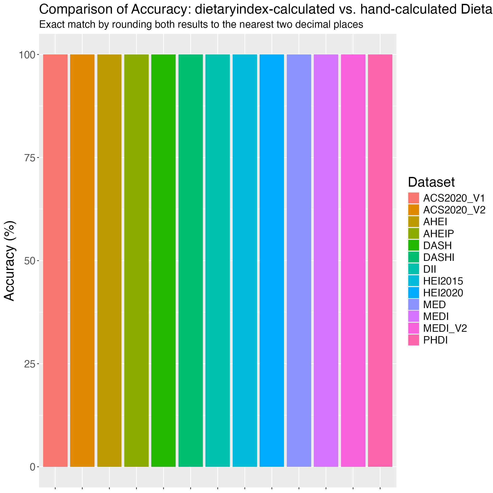
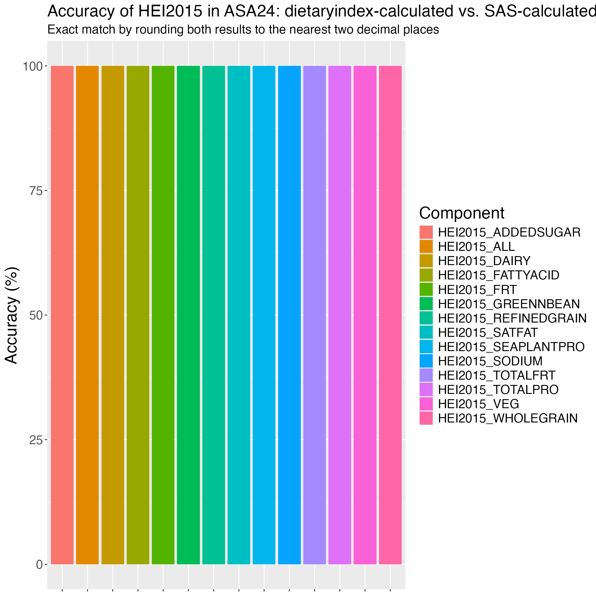
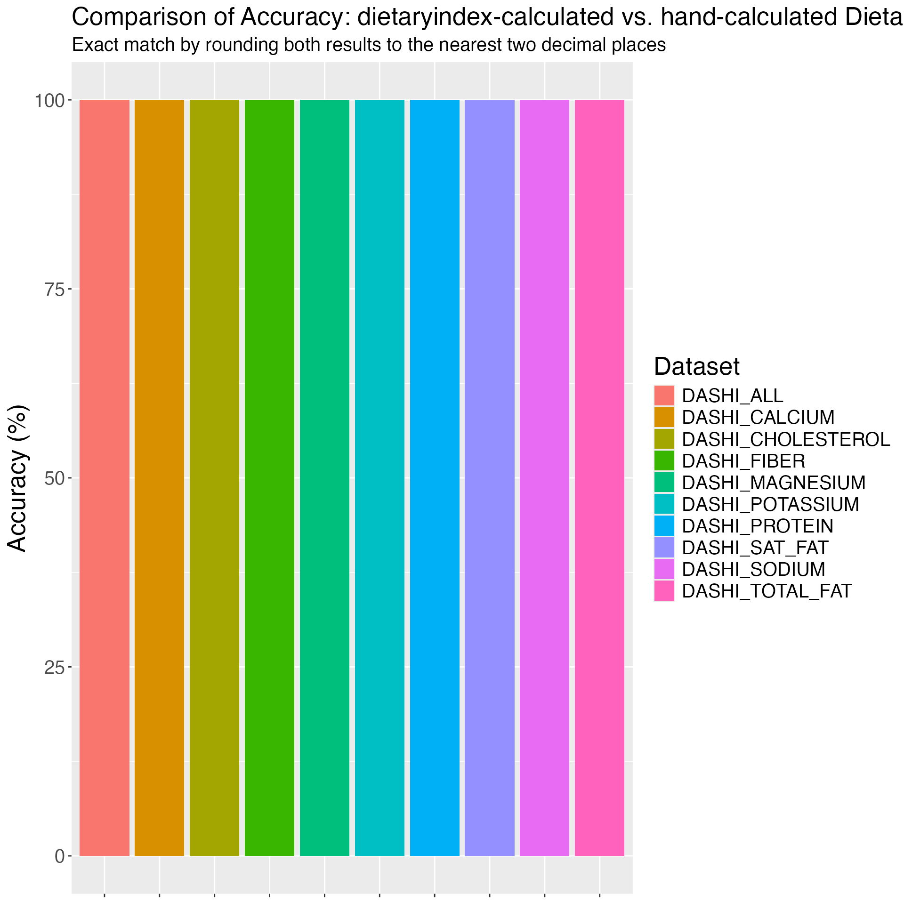
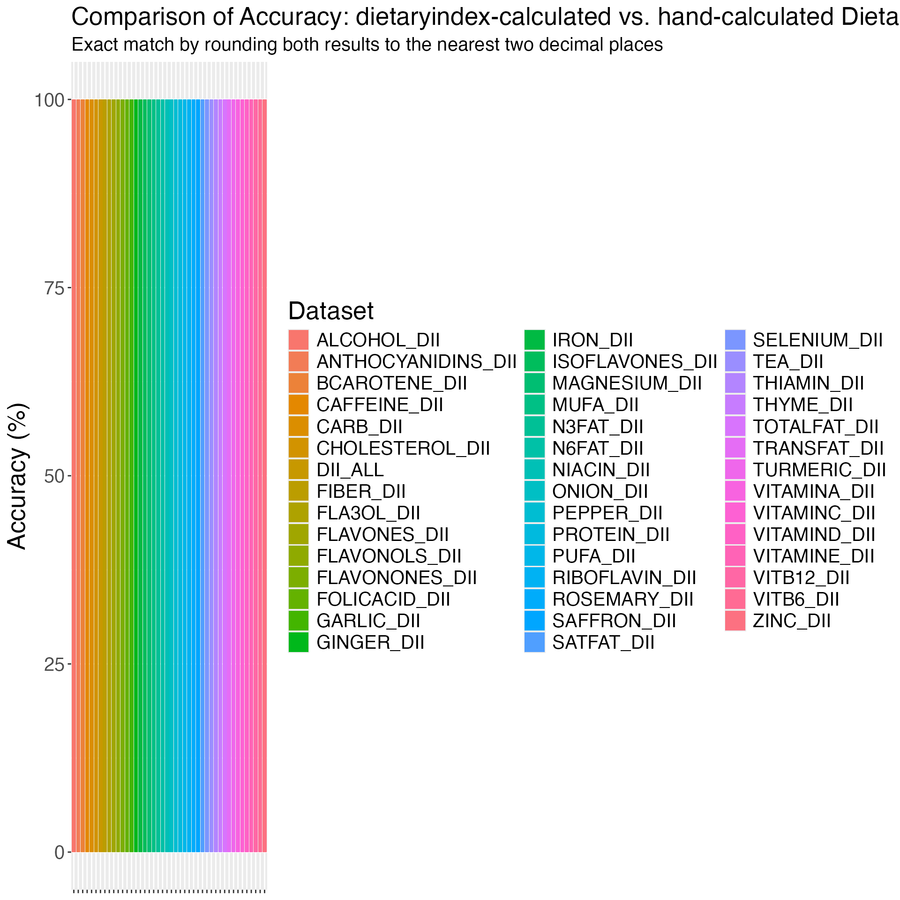
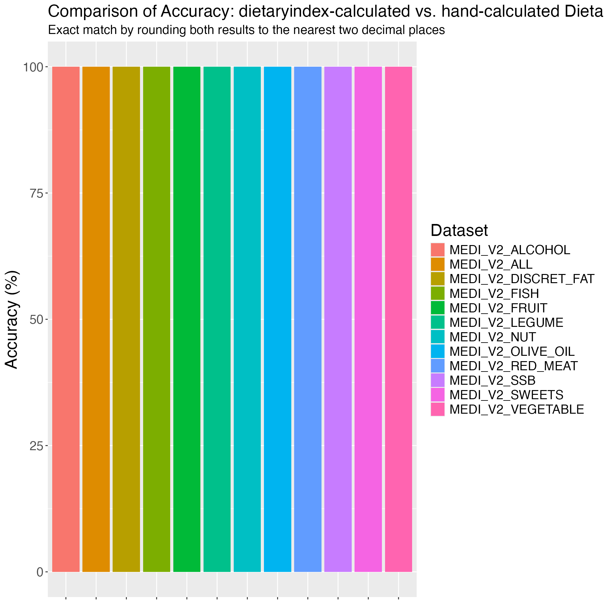
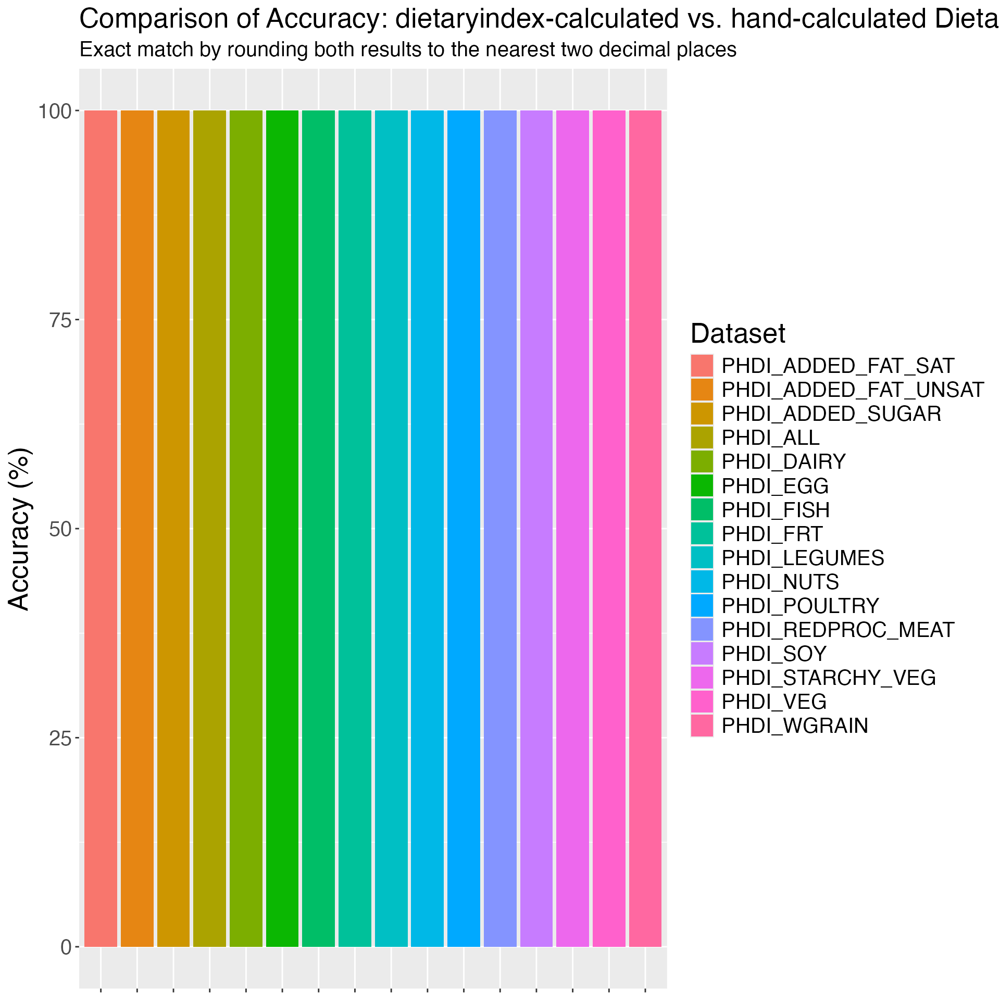

Validation
James Zhan
2024-04-27
validation.RmdLoad packages and data
library(dietaryindex) # Load the package## Loaded dietaryindex## Thank you for using dietaryindex!## Tutorials: https://github.com/jamesjiadazhan/dietaryindex## Dietary index calculations vary by the research question of the analysis. Currently, dietaryindex only supports simple scoring algorithm methods for all dietary indexes. Please use dietaryindex responsibly according to your research question. For more information, please refer to this resource: https://epi.grants.cancer.gov/hei/tools.html.## Cite us: citation('dietaryindex') or
## Zhan JJ, Hodge RA, Dunlop AL, et al. Dietaryindex: a user-friendly and versatile R package for standardizing dietary pattern analysis in epidemiological and clinical studies. Am J Clin Nutr. Published online August 23, 2024. doi:10.1016/j.ajcnut.2024.08.021##
## Attaching package: 'dplyr'## The following objects are masked from 'package:stats':
##
## filter, lag## The following objects are masked from 'package:base':
##
## intersect, setdiff, setequal, union
library(haven)
# Load the data
## set up the working directory
setwd("/Users/james/Library/Mobile Documents/com~apple~CloudDocs/Desktop/Emory University - Ph.D./dietaryindex_package/Validation file for publication/Raw validation files")
ACS2020_V1_VALIDATION = read_csv("ACS2020_V1_validation.csv")## Rows: 24 Columns: 20## ── Column specification ────────────────────────────────────────────────────────
## Delimiter: ","
## dbl (20): id, gender, kcal, vegetable, vegetable_unique, fruit, fruit_unique...
##
## ℹ Use `spec()` to retrieve the full column specification for this data.
## ℹ Specify the column types or set `show_col_types = FALSE` to quiet this message.
ACS2020_V2_VALIDATION = read_csv("ACS2020_V2_validation.csv")## Rows: 24 Columns: 20
## ── Column specification ────────────────────────────────────────────────────────
## Delimiter: ","
## dbl (20): id, gender, kcal, vegetable, vegetable_unique, fruit, fruit_unique...
##
## ℹ Use `spec()` to retrieve the full column specification for this data.
## ℹ Specify the column types or set `show_col_types = FALSE` to quiet this message.
AHEI_VALIDATION = read_csv("AHEI_validation.csv")## Rows: 22 Columns: 27
## ── Column specification ────────────────────────────────────────────────────────
## Delimiter: ","
## dbl (27): id, gender, kcal, vegetable, fruit, whole_grain, nut_legume, n3_fa...
##
## ℹ Use `spec()` to retrieve the full column specification for this data.
## ℹ Specify the column types or set `show_col_types = FALSE` to quiet this message.
AHEIP_VALIDATION = read_csv("AHEIP_validation.csv")## Rows: 11 Columns: 22
## ── Column specification ────────────────────────────────────────────────────────
## Delimiter: ","
## dbl (22): id, gender, kcal, vegetable, whole_fruit, white_meat_red_meat, fib...
##
## ℹ Use `spec()` to retrieve the full column specification for this data.
## ℹ Specify the column types or set `show_col_types = FALSE` to quiet this message.
DASH_VALIDATION = read_csv("DASH_validation.csv")## Rows: 10 Columns: 20
## ── Column specification ────────────────────────────────────────────────────────
## Delimiter: ","
## dbl (20): id, gender, kcal, fruit, vegetable, nut_legume, whole_grain, low_f...
##
## ℹ Use `spec()` to retrieve the full column specification for this data.
## ℹ Specify the column types or set `show_col_types = FALSE` to quiet this message.
DASHI_VALIDATION = read_csv("DASHI_validation.csv")## Rows: 11 Columns: 22
## ── Column specification ────────────────────────────────────────────────────────
## Delimiter: ","
## dbl (22): id, gender, kcal, total_fat, sat_fat, protein, cholesterol, fiber,...
##
## ℹ Use `spec()` to retrieve the full column specification for this data.
## ℹ Specify the column types or set `show_col_types = FALSE` to quiet this message.
DII_VALIDATION = read_csv("DII_validation.csv")## Rows: 3 Columns: 92
## ── Column specification ────────────────────────────────────────────────────────
## Delimiter: ","
## dbl (92): id, Alcohol, vitamin B12, vitamin B6, Beta-carotene, Caffeine, Car...
##
## ℹ Use `spec()` to retrieve the full column specification for this data.
## ℹ Specify the column types or set `show_col_types = FALSE` to quiet this message.
HEI2015_VALIDATION = read_csv("HEI2015_validation.csv")## Rows: 11 Columns: 30
## ── Column specification ────────────────────────────────────────────────────────
## Delimiter: ","
## dbl (30): id, gender, kcal, total_fruit, whole_fruit, total_vegetable, green...
##
## ℹ Use `spec()` to retrieve the full column specification for this data.
## ℹ Specify the column types or set `show_col_types = FALSE` to quiet this message.
HEI2020_VALIDATION = read_csv("HEI2020_validation.csv")## Rows: 22 Columns: 31
## ── Column specification ────────────────────────────────────────────────────────
## Delimiter: ","
## dbl (31): id, gender, age, kcal, total_fruit, whole_fruit, total_vegetable, ...
##
## ℹ Use `spec()` to retrieve the full column specification for this data.
## ℹ Specify the column types or set `show_col_types = FALSE` to quiet this message.
MED_VALIDATION = read_csv("MED_validation.csv")## Rows: 11 Columns: 22
## ── Column specification ────────────────────────────────────────────────────────
## Delimiter: ","
## dbl (22): id, gender, kcal, fruit, vegetable, whole_grain, legume, nut, fish...
##
## ℹ Use `spec()` to retrieve the full column specification for this data.
## ℹ Specify the column types or set `show_col_types = FALSE` to quiet this message.
MEDI_V2_VALIDATION = read_csv("MEDI_V2_validation.csv")## Rows: 11 Columns: 26
## ── Column specification ────────────────────────────────────────────────────────
## Delimiter: ","
## dbl (26): id, gender, kcal, olive_oil, vegetable, fruit, legume, nut, fish, ...
##
## ℹ Use `spec()` to retrieve the full column specification for this data.
## ℹ Specify the column types or set `show_col_types = FALSE` to quiet this message.
MEDI_VALIDATION = read_csv("MEDI_validation.csv")## Rows: 11 Columns: 26
## ── Column specification ────────────────────────────────────────────────────────
## Delimiter: ","
## dbl (26): id, gender, kcal, olive_oil, vegetable, fruit, legume, nut, fish, ...
##
## ℹ Use `spec()` to retrieve the full column specification for this data.
## ℹ Specify the column types or set `show_col_types = FALSE` to quiet this message.
PHDI_VALIDATION = read_csv("PHDI_validation.csv")## Rows: 26 Columns: 34
## ── Column specification ────────────────────────────────────────────────────────
## Delimiter: ","
## dbl (34): id, gender, TOTALKCAL_PHDI, WGRAIN_SERV_PHDI, STARCHY_VEG_SERV_PHD...
##
## ℹ Use `spec()` to retrieve the full column specification for this data.
## ℹ Specify the column types or set `show_col_types = FALSE` to quiet this message.Calculate multiple dietart indexes using the simulation datasets (sample sizes range from 10 to 26).
# Generate the validation results and save them
setwd("/Users/james/Library/Mobile Documents/com~apple~CloudDocs/Desktop/Emory University - Ph.D./dietaryindex_package/Validation file for publication/Final validation files")
## ACS2020 validation (Version 1)
ACS2020_V1_VALIDATION_RESULT = ACS2020_V1(
SERV_DATA = ACS2020_V1_VALIDATION,
RESPONDENTID = ACS2020_V1_VALIDATION$id,
GENDER = ACS2020_V1_VALIDATION$gender,
VEG_SERV_ACS2020 = ACS2020_V1_VALIDATION$vegetable,
VEG_ITEMS_SERV_ACS2020 = ACS2020_V1_VALIDATION$vegetable_unique,
FRT_SERV_ACS2020 = ACS2020_V1_VALIDATION$fruit,
FRT_ITEMS_SERV_ACS2020 = ACS2020_V1_VALIDATION$fruit_unique,
WGRAIN_SERV_ACS2020 = ACS2020_V1_VALIDATION$whole_grain,
REDPROC_MEAT_SERV_ACS2020 = ACS2020_V1_VALIDATION$red_meat,
HPFRG_RATIO_SERV_ACS2020 = ACS2020_V1_VALIDATION$process_food,
SSB_FRTJ_SERV_ACS2020 = ACS2020_V1_VALIDATION$ssb)## [1] "Reminder: this ACS2020_V1 index uses quartiles to rank participants' food/drink serving sizes and then calculate the component scores, which may generate results that are specific to your study population but not comparable to other populations."
# Merge the validation data with the result
ACS2020_V1_VALIDATION_RESULT_FINAL = ACS2020_V1_VALIDATION %>%
left_join(ACS2020_V1_VALIDATION_RESULT, by = c("id" = "RESPONDENTID"))
# Save the result
write_csv(ACS2020_V1_VALIDATION_RESULT_FINAL, "ACS2020_V1_validation_result.csv")
## ACS2020 validation (Version 2)
ACS2020_V2_VALIDATION_RESULT = ACS2020_V2(
SERV_DATA = ACS2020_V2_VALIDATION,
RESPONDENTID = ACS2020_V2_VALIDATION$id,
GENDER = ACS2020_V2_VALIDATION$gender,
VEG_SERV_ACS2020 = ACS2020_V2_VALIDATION$vegetable,
VEG_ITEMS_SERV_ACS2020 = ACS2020_V2_VALIDATION$vegetable_unique,
FRT_SERV_ACS2020 = ACS2020_V2_VALIDATION$fruit,
FRT_ITEMS_SERV_ACS2020 = ACS2020_V2_VALIDATION$fruit_unique,
WGRAIN_SERV_ACS2020 = ACS2020_V2_VALIDATION$whole_grain,
REDPROC_MEAT_SERV_ACS2020 = ACS2020_V2_VALIDATION$red_meat,
HPFRG_SERV_ACS2020 = ACS2020_V2_VALIDATION$process_food,
SSB_FRTJ_SERV_ACS2020 = ACS2020_V2_VALIDATION$ssb,
TOTALKCAL_ACS2020 = ACS2020_V2_VALIDATION$kcal)## [1] "Reminder: this ACS2020_V2 index uses quartiles to rank participants' food/drink serving sizes and then calculate the component scores, which may generate results that are specific to your study population but not comparable to other populations."
# Merge the validation data with the result
ACS2020_V2_VALIDATION_RESULT_FINAL = ACS2020_V2_VALIDATION %>%
left_join(ACS2020_V2_VALIDATION_RESULT, by = c("id" = "RESPONDENTID"))
# Save the result
write_csv(ACS2020_V2_VALIDATION_RESULT_FINAL, "ACS2020_V2_validation_result.csv")
## AHEI validation
AHEI_VALIDATION_RESULT = AHEI(
SERV_DATA = AHEI_VALIDATION,
RESPONDENTID = AHEI_VALIDATION$id,
GENDER = AHEI_VALIDATION$gender,
TOTALKCAL_AHEI = AHEI_VALIDATION$kcal,
VEG_SERV_AHEI = AHEI_VALIDATION$vegetable,
FRT_SERV_AHEI = AHEI_VALIDATION$fruit,
WGRAIN_SERV_AHEI = AHEI_VALIDATION$whole_grain,
NUTSLEG_SERV_AHEI = AHEI_VALIDATION$nut_legume,
N3FAT_SERV_AHEI = AHEI_VALIDATION$n3_fat,
PUFA_SERV_AHEI = AHEI_VALIDATION$pufa,
SSB_FRTJ_SERV_AHEI = AHEI_VALIDATION$ssb_fruit_juice,
REDPROC_MEAT_SERV_AHEI = AHEI_VALIDATION$red_processed_meat,
TRANS_SERV_AHEI = AHEI_VALIDATION$trans_fat,
SODIUM_SERV_AHEI = AHEI_VALIDATION$sodium,
ALCOHOL_SERV_AHEI = AHEI_VALIDATION$alcohol
)
# Merge the validation data with the result
AHEI_VALIDATION_RESULT_FINAL = AHEI_VALIDATION %>%
left_join(AHEI_VALIDATION_RESULT, by = c("id" = "RESPONDENTID"))
# Save the result
write_csv(AHEI_VALIDATION_RESULT_FINAL, "AHEI_validation_result.csv")
## HEI2015 validation
HEI2015_VALIDATION_RESULT = HEI2015(
SERV_DATA = HEI2015_VALIDATION,
RESPONDENTID = HEI2015_VALIDATION$id,
TOTALKCAL_HEI2015 = HEI2015_VALIDATION$kcal,
TOTALFRT_SERV_HEI2015 = HEI2015_VALIDATION$total_fruit,
FRT_SERV_HEI2015 = HEI2015_VALIDATION$whole_fruit,
VEG_SERV_HEI2015 = HEI2015_VALIDATION$total_vegetable,
GREENNBEAN_SERV_HEI2015 = HEI2015_VALIDATION$green_and_bean,
TOTALPRO_SERV_HEI2015 = HEI2015_VALIDATION$total_protein,
SEAPLANTPRO_SERV_HEI2015 = HEI2015_VALIDATION$seafood_plant_protein,
WHOLEGRAIN_SERV_HEI2015 = HEI2015_VALIDATION$whole_grain,
DAIRY_SERV_HEI2015 = HEI2015_VALIDATION$dairy,
FATTYACID_SERV_HEI2015 = HEI2015_VALIDATION$fatty_acid,
REFINEDGRAIN_SERV_HEI2015 = HEI2015_VALIDATION$refined_grain,
SODIUM_SERV_HEI2015 = HEI2015_VALIDATION$sodium,
ADDEDSUGAR_SERV_HEI2015 = HEI2015_VALIDATION$added_sugar,
SATFAT_SERV_HEI2015 = HEI2015_VALIDATION$saturated_fat
)
# Merge the validation data with the result
HEI2015_VALIDATION_RESULT_FINAL = HEI2015_VALIDATION %>%
left_join(HEI2015_VALIDATION_RESULT, by = c("id" = "RESPONDENTID"))
# Save the merged result
write_csv(HEI2015_VALIDATION_RESULT_FINAL, "HEI2015_validation_result.csv")
## HEI2020 validation
HEI2020_VALIDATION_RESULT = HEI2020(
SERV_DATA = HEI2020_VALIDATION,
RESPONDENTID = HEI2020_VALIDATION$id,
AGE = HEI2020_VALIDATION$age,
TOTALKCAL_HEI2020 = HEI2020_VALIDATION$kcal,
TOTALFRT_SERV_HEI2020 = HEI2020_VALIDATION$total_fruit,
FRT_SERV_HEI2020 = HEI2020_VALIDATION$whole_fruit,
VEG_SERV_HEI2020 = HEI2020_VALIDATION$total_vegetable,
GREENNBEAN_SERV_HEI2020 = HEI2020_VALIDATION$green_and_bean,
TOTALPRO_SERV_HEI2020 = HEI2020_VALIDATION$total_protein,
SEAPLANTPRO_SERV_HEI2020 = HEI2020_VALIDATION$seafood_plant_protein,
WHOLEGRAIN_SERV_HEI2020 = HEI2020_VALIDATION$whole_grain,
DAIRY_SERV_HEI2020 = HEI2020_VALIDATION$dairy,
FATTYACID_SERV_HEI2020 = HEI2020_VALIDATION$fatty_acid,
REFINEDGRAIN_SERV_HEI2020 = HEI2020_VALIDATION$refined_grain,
SODIUM_SERV_HEI2020 = HEI2020_VALIDATION$sodium,
ADDEDSUGAR_SERV_HEI2020 = HEI2020_VALIDATION$added_sugar,
SATFAT_SERV_HEI2020 = HEI2020_VALIDATION$saturated_fat
)
HEI2020_VALIDATION_RESULT_FINAL = HEI2020_VALIDATION %>%
left_join(HEI2020_VALIDATION_RESULT, by = c("id" = "RESPONDENTID"))
# Save the merged result
write_csv(HEI2020_VALIDATION_RESULT_FINAL, "HEI2020_validation_result.csv")
## AHEIP validation
AHEIP_VALIDATION_RESULT = AHEIP(
SERV_DATA = AHEIP_VALIDATION,
RESPONDENTID = AHEIP_VALIDATION$id,
VEG_SERV_AHEIP = AHEIP_VALIDATION$vegetable,
FRT_SERV_AHEIP = AHEIP_VALIDATION$whole_fruit,
WHITERED_RT_SERV_AHEIP = AHEIP_VALIDATION$white_meat_red_meat,
FIBER_SERV_AHEIP = AHEIP_VALIDATION$fiber,
TRANS_SERV_AHEIP = AHEIP_VALIDATION$trans_fat,
POLYSAT_RT_SERV_AHEIP = AHEIP_VALIDATION$poly_fat_sat_fat,
CALCIUM_SERV_AHEIP = AHEIP_VALIDATION$calcium,
FOLATE_SERV_AHEIP = AHEIP_VALIDATION$folate,
IRON_SERV_AHEIP = AHEIP_VALIDATION$iron
)
# Merge the validation data with the result
AHEIP_VALIDATION_RESULT_FINAL = AHEIP_VALIDATION %>%
left_join(AHEIP_VALIDATION_RESULT, by = c("id" = "RESPONDENTID"))
# Save the merged result
write_csv(AHEIP_VALIDATION_RESULT_FINAL, "AHEIP_validation_result.csv")
## DASH validation
DASH_VALIDATION_RESULT = DASH(
SERV_DATA = DASH_VALIDATION,
RESPONDENTID = DASH_VALIDATION$id,
TOTALKCAL_DASH = DASH_VALIDATION$kcal,
FRT_FRTJ_SERV_DASH = DASH_VALIDATION$fruit,
VEG_SERV_DASH = DASH_VALIDATION$vegetable,
NUTSLEG_SERV_DASH = DASH_VALIDATION$nut_legume,
WGRAIN_SERV_DASH = DASH_VALIDATION$whole_grain,
LOWF_DAIRY_SERV_DASH = DASH_VALIDATION$low_fat_dairy,
SODIUM_SERV_DASH = DASH_VALIDATION$sodium,
REDPROC_MEAT_SERV_DASH = DASH_VALIDATION$red_processed_meat,
SSB_FRTJ_SERV_DASH = DASH_VALIDATION$ssb
)## Reminder: this DASH index uses quintiles to rank participants' food/drink serving sizes and then calculate DASH component scores, which may generate results that are specific to your study population but not comparable to other populations.
# Merge the validation data with the result
DASH_VALIDATION_RESULT_FINAL = DASH_VALIDATION %>%
left_join(DASH_VALIDATION_RESULT, by = c("id" = "RESPONDENTID"))
# Save the merged result
write_csv(DASH_VALIDATION_RESULT_FINAL, "DASH_validation_result.csv")
## DASHI validation
DASHI_VALIDATION_RESULT = DASHI(
SERV_DATA = DASHI_VALIDATION,
RESPONDENTID = DASHI_VALIDATION$id,
TOTALKCAL_DASHI = DASHI_VALIDATION$kcal,
TOTAL_FAT_DASHI = DASHI_VALIDATION$total_fat,
SAT_FAT_DASHI = DASHI_VALIDATION$sat_fat,
PROTEIN_DASHI = DASHI_VALIDATION$protein,
CHOLESTEROL_DASHI = DASHI_VALIDATION$cholesterol,
FIBER_DASHI = DASHI_VALIDATION$fiber,
POTASSIUM_DASHI = DASHI_VALIDATION$potassium,
MAGNESIUM_DASHI = DASHI_VALIDATION$magnesium,
CALCIUM_DASHI = DASHI_VALIDATION$calcium,
SODIUM_DASHI = DASHI_VALIDATION$sodium
)
# Merge the validation data with the result
DASHI_VALIDATION_RESULT_FINAL = DASHI_VALIDATION %>%
left_join(DASHI_VALIDATION_RESULT, by = c("id" = "RESPONDENTID"))
# Save the merged result
write_csv(DASHI_VALIDATION_RESULT_FINAL, "DASHI_validation_result.csv")
## MED validation
MED_VALIDATION_RESULT = MED(
SERV_DATA = MED_VALIDATION,
RESPONDENTID = MED_VALIDATION$id,
FRT_FRTJ_SERV_MED = MED_VALIDATION$fruit,
VEG_SERV_MED = MED_VALIDATION$vegetable,
WGRAIN_SERV_MED = MED_VALIDATION$whole_grain,
LEGUMES_SERV_MED = MED_VALIDATION$legume,
NUTS_SERV_MED = MED_VALIDATION$nut,
FISH_SERV_MED = MED_VALIDATION$fish,
REDPROC_MEAT_SERV_MED = MED_VALIDATION$red_processed_meat,
MONSATFAT_SERV_MED = MED_VALIDATION$monofat_satfat,
ALCOHOL_SERV_MED = MED_VALIDATION$alcohol)## Reminder: this MED index uses medians to rank participants' food/drink serving sizes and then calculate MED component scores, which may generate results that are specific to your study population but not comparable to other populations.
# Merge the validation data with the result
MED_VALIDATION_RESULT_FINAL = MED_VALIDATION %>%
left_join(MED_VALIDATION_RESULT, by = c("id" = "RESPONDENTID"))
# Save the result
write_csv(MED_VALIDATION_RESULT_FINAL, "MED_VALIDATION_RESULT_FINAL.csv")
## MEDI validation
MEDI_VALIDATION_RESULT = MEDI(
SERV_DATA = MEDI_VALIDATION,
RESPONDENTID = MEDI_VALIDATION$id,
OLIVE_OIL_SERV_MEDI = MEDI_VALIDATION$olive_oil,
VEG_SERV_MEDI = MEDI_VALIDATION$vegetable,
FRT_SERV_MEDI = MEDI_VALIDATION$fruit,
LEGUMES_SERV_MEDI = MEDI_VALIDATION$legume,
NUTS_SERV_MEDI = MEDI_VALIDATION$nut,
FISH_SEAFOOD_SERV_MEDI = MEDI_VALIDATION$fish,
ALCOHOL_SERV_MEDI = MEDI_VALIDATION$alcohol,
SSB_SERV_MEDI = MEDI_VALIDATION$ssb,
SWEETS_SERV_MEDI = MEDI_VALIDATION$sweets,
DISCRET_FAT_SERV_MEDI = MEDI_VALIDATION$discret_fat,
REDPROC_MEAT_SERV_MEDI = MEDI_VALIDATION$red_meat)
# Merge the validation data with the result
MEDI_VALIDATION_RESULT_FINAL = MEDI_VALIDATION %>%
left_join(MEDI_VALIDATION_RESULT, by = c("id" = "RESPONDENTID"))
# Save the result
write_csv(MEDI_VALIDATION_RESULT_FINAL, "MEDI_validation_result.csv")
## MEDI_V2 validation
MEDI_V2_VALIDATION_RESULT = MEDI_V2(
SERV_DATA = MEDI_V2_VALIDATION,
RESPONDENTID = MEDI_V2_VALIDATION$id,
OLIVE_OIL_SERV_MEDI = MEDI_V2_VALIDATION$olive_oil,
VEG_SERV_MEDI = MEDI_V2_VALIDATION$vegetable,
FRT_SERV_MEDI = MEDI_V2_VALIDATION$fruit,
LEGUMES_SERV_MEDI = MEDI_V2_VALIDATION$legume,
NUTS_SERV_MEDI = MEDI_V2_VALIDATION$nut,
FISH_SEAFOOD_SERV_MEDI = MEDI_V2_VALIDATION$fish,
ALCOHOL_SERV_MEDI = MEDI_V2_VALIDATION$alcohol,
SSB_SERV_MEDI = MEDI_V2_VALIDATION$ssb,
SWEETS_SERV_MEDI = MEDI_V2_VALIDATION$sweets,
DISCRET_FAT_SERV_MEDI = MEDI_V2_VALIDATION$discret_fat,
REDPROC_MEAT_SERV_MEDI = MEDI_V2_VALIDATION$red_meat)
# Merge the validation data with the result
MEDI_V2_VALIDATION_RESULT_FINAL = MEDI_V2_VALIDATION %>%
left_join(MEDI_V2_VALIDATION_RESULT, by = c("id" = "RESPONDENTID"))
# Save the result
write_csv(MEDI_V2_VALIDATION_RESULT_FINAL, "MEDI_V2_validation_result.csv")
## PHDI validation
PHDI_VALIDATION_RESULT = PHDI(
SERV_DATA=PHDI_VALIDATION,
PHDI_VALIDATION$id,
PHDI_VALIDATION$gender,
PHDI_VALIDATION$TOTALKCAL_PHDI,
PHDI_VALIDATION$WGRAIN_SERV_PHDI,
PHDI_VALIDATION$STARCHY_VEG_SERV_PHDI,
PHDI_VALIDATION$VEG_SERV_PHDI,
PHDI_VALIDATION$FRT_SERV_PHDI,
PHDI_VALIDATION$DAIRY_SERV_PHDI,
PHDI_VALIDATION$REDPROC_MEAT_SERV_PHDI,
PHDI_VALIDATION$POULTRY_SERV_PHDI,
PHDI_VALIDATION$EGG_SERV_PHDI,
PHDI_VALIDATION$FISH_SERV_PHDI,
PHDI_VALIDATION$NUTS_SERV_PHDI,
PHDI_VALIDATION$LEGUMES_SERV_PHDI,
PHDI_VALIDATION$SOY_SERV_PHDI,
PHDI_VALIDATION$ADDED_FAT_UNSAT_SERV_PHDI,
PHDI_VALIDATION$ADDED_FAT_SAT_TRANS_SERV_PHDI,
PHDI_VALIDATION$ADDED_SUGAR_SERV_PHDI
)
# Merge the validation data with the result
PHDI_VALIDATION_RESULT_FINAL = PHDI_VALIDATION %>%
left_join(PHDI_VALIDATION_RESULT, by = c("id" = "RESPONDENTID"))
# Save the result
write_csv(PHDI_VALIDATION_RESULT_FINAL, "PHDI_validation_result.csv")
## DII validation
DII_VALIDATION_RESULT = DII(SERV_DATA = DII_VALIDATION, RESPONDENTID = DII_VALIDATION$id, REPEATNUM = 1, ALCOHOL_DII = DII_VALIDATION$Alcohol, VITB12_DII = DII_VALIDATION$`vitamin B12`, VITB6_DII = DII_VALIDATION$`vitamin B6`, BCAROTENE_DII = DII_VALIDATION$`Beta-carotene`, CAFFEINE_DII = DII_VALIDATION$Caffeine, CARB_DII = DII_VALIDATION$Carbohydrate, CHOLES_DII = DII_VALIDATION$Cholesterol, KCAL_DII = DII_VALIDATION$Energy, EUGENOL_DII = DII_VALIDATION$Eugenol, TOTALFAT_DII = DII_VALIDATION$`Total fat`, FIBER_DII = DII_VALIDATION$Fiber, FOLICACID_DII = DII_VALIDATION$`Folic acid`, GARLIC_DII = DII_VALIDATION$Garlic, GINGER_DII = DII_VALIDATION$Ginger, IRON_DII = DII_VALIDATION$Iron, MG_DII = DII_VALIDATION$Magnesium, MUFA_DII = DII_VALIDATION$MUFA, NIACIN_DII = DII_VALIDATION$Niacin, N3FAT_DII = DII_VALIDATION$`n-3 fatty acid`, N6FAT_DII = DII_VALIDATION$`n-6 fatty acid`, ONION_DII = DII_VALIDATION$Onion, PROTEIN_DII = DII_VALIDATION$Protein, PUFA_DII = DII_VALIDATION$PUFA, RIBOFLAVIN_DII = DII_VALIDATION$Riboflavin, SAFFRON_DII = DII_VALIDATION$Saffron, SATFAT_DII = DII_VALIDATION$`Saturated fat`, SE_DII = DII_VALIDATION$Selenium, THIAMIN_DII = DII_VALIDATION$Thiamin, TRANSFAT_DII = DII_VALIDATION$`Trans fat`, TURMERIC_DII = DII_VALIDATION$Turmeric, VITA_DII = DII_VALIDATION$`Vitamin A`, VITC_DII = DII_VALIDATION$`Vitamin C`, VITD_DII = DII_VALIDATION$`Vitamin D`, VITE_DII = DII_VALIDATION$`Vitamin E`, ZN_DII = DII_VALIDATION$Zinc, TEA_DII = DII_VALIDATION$`Green/black tea`, FLA3OL_DII = DII_VALIDATION$`Flavan-3-ol`, FLAVONES_DII = DII_VALIDATION$Flavones, FLAVONOLS_DII = DII_VALIDATION$Flavonols, FLAVONONES_DII = DII_VALIDATION$Flavonones, ANTHOC_DII = DII_VALIDATION$Anthocyanidins, ISOFLAVONES_DII = DII_VALIDATION$`Isoflavones`, PEPPER_DII = DII_VALIDATION$Pepper, THYME_DII = DII_VALIDATION$Thyme_oregano, ROSEMARY_DII = DII_VALIDATION$Rosemary)## It is normal to see warnings if you do not provide all arguments using DII. The algorithm will only count the arguments you enter to calculate the DII. All warnings are about the first column you don't use. For example, if you only entered alcohol, vitamin b12, and vitamin b6, all warnings would remind you that bcarotene is not found.Use dietaryindex to calculate HEI2015 using the NHANES 2017-2018 data (n=7122).
## $FPED
## # A tibble: 8,704 × 51
## SEQN RIAGENDR RIDAGEYR RIDRETH3 SDMVPSU SDMVSTRA INDFMIN2 INDFMPIR WTDRD1
## <dbl> <dbl> <dbl> <dbl> <dbl> <dbl> <dbl> <dbl> <dbl>
## 1 93703 2 2 6 2 145 15 5 0
## 2 93704 1 2 3 1 143 15 5 81714.
## 3 93705 2 66 4 2 145 3 0.82 7186.
## 4 93706 1 18 6 2 134 NA NA 6464.
## 5 93707 1 13 7 1 138 10 1.88 15334.
## 6 93708 2 66 6 2 138 6 1.63 10826.
## 7 93709 2 75 4 1 136 2 0.41 0
## 8 93710 2 0 3 1 134 15 4.9 8616.
## 9 93711 1 56 6 2 134 15 5 9098.
## 10 93712 1 18 1 2 147 4 0.76 60947.
## # ℹ 8,694 more rows
## # ℹ 42 more variables: WTDR2D <dbl>, DR1DRSTZ <dbl>, DRABF <dbl>, DRDINT <dbl>,
## # DR1TNUMF <dbl>, DR1T_F_TOTAL <dbl>, DR1T_F_CITMLB <dbl>,
## # DR1T_F_OTHER <dbl>, DR1T_F_JUICE <dbl>, DR1T_V_TOTAL <dbl>,
## # DR1T_V_DRKGR <dbl>, DR1T_V_REDOR_TOTAL <dbl>, DR1T_V_REDOR_TOMATO <dbl>,
## # DR1T_V_REDOR_OTHER <dbl>, DR1T_V_STARCHY_TOTAL <dbl>,
## # DR1T_V_STARCHY_POTATO <dbl>, DR1T_V_STARCHY_OTHER <dbl>, …
##
## $NUTRIENT
## # A tibble: 8,704 × 168
## SEQN WTDRD1 WTDR2D DR1DRSTZ DR1EXMER DRABF DRDINT DR1DBIH DR1DAY DR1LANG
## <dbl> <dbl> <dbl> <dbl> <dbl> <dbl> <dbl> <dbl> <dbl> <dbl>
## 1 93703 0 NA 5 NA NA NA NA NA NA
## 2 93704 81714. 82443. 1 49 2 2 7 2 1
## 3 93705 7186. 5640. 1 73 2 2 5 1 1
## 4 93706 6464. 0 1 86 2 1 NA 6 1
## 5 93707 15334. 22707. 1 81 2 2 14 2 1
## 6 93708 10826. 22482. 1 73 2 2 41 7 6
## 7 93709 0 NA 5 NA NA NA NA NA NA
## 8 93710 8616. 7185. 1 14 2 2 16 6 1
## 9 93711 9098. 8230. 1 86 2 2 13 6 1
## 10 93712 60947. 89066. 1 88 2 2 14 3 1
## # ℹ 8,694 more rows
## # ℹ 158 more variables: DR1MRESP <dbl>, DR1HELP <dbl>, DBQ095Z <dbl>,
## # DBD100 <dbl>, DRQSPREP <dbl>, DR1STY <dbl>, DR1SKY <dbl>, DRQSDIET <dbl>,
## # DRQSDT1 <dbl>, DRQSDT2 <dbl>, DRQSDT3 <dbl>, DRQSDT4 <dbl>, DRQSDT5 <dbl>,
## # DRQSDT6 <dbl>, DRQSDT7 <dbl>, DRQSDT8 <dbl>, DRQSDT9 <dbl>, DRQSDT10 <dbl>,
## # DRQSDT11 <dbl>, DRQSDT12 <dbl>, DRQSDT91 <dbl>, DR1TNUMF <dbl>,
## # DR1TKCAL <dbl>, DR1TPROT <dbl>, DR1TCARB <dbl>, DR1TSUGR <dbl>, …
##
## $DEMO
## # A tibble: 9,254 × 46
## SEQN SDDSRVYR RIDSTATR RIAGENDR RIDAGEYR RIDAGEMN RIDRETH1 RIDRETH3 RIDEXMON
## <dbl> <dbl> <dbl> <dbl> <dbl> <dbl> <dbl> <dbl> <dbl>
## 1 93703 10 2 2 2 NA 5 6 2
## 2 93704 10 2 1 2 NA 3 3 1
## 3 93705 10 2 2 66 NA 4 4 2
## 4 93706 10 2 1 18 NA 5 6 2
## 5 93707 10 2 1 13 NA 5 7 2
## 6 93708 10 2 2 66 NA 5 6 2
## 7 93709 10 2 2 75 NA 4 4 1
## 8 93710 10 2 2 0 11 3 3 2
## 9 93711 10 2 1 56 NA 5 6 2
## 10 93712 10 2 1 18 NA 1 1 2
## # ℹ 9,244 more rows
## # ℹ 37 more variables: RIDEXAGM <dbl>, DMQMILIZ <dbl>, DMQADFC <dbl>,
## # DMDBORN4 <dbl>, DMDCITZN <dbl>, DMDYRSUS <dbl>, DMDEDUC3 <dbl>,
## # DMDEDUC2 <dbl>, DMDMARTL <dbl>, RIDEXPRG <dbl>, SIALANG <dbl>,
## # SIAPROXY <dbl>, SIAINTRP <dbl>, FIALANG <dbl>, FIAPROXY <dbl>,
## # FIAINTRP <dbl>, MIALANG <dbl>, MIAPROXY <dbl>, MIAINTRP <dbl>,
## # AIALANGA <dbl>, DMDHHSIZ <dbl>, DMDFMSIZ <dbl>, DMDHHSZA <dbl>, …
##
## $NUTRIENT_IND
## # A tibble: 112,683 × 84
## SEQN WTDRD1 WTDR2D DR1ILINE DR1DRSTZ DR1EXMER DRABF DRDINT DR1DBIH DR1DAY
## <dbl> <dbl> <dbl> <dbl> <dbl> <dbl> <dbl> <dbl> <dbl> <dbl>
## 1 93704 81714. 82443. 1 1 49 2 2 7 2
## 2 93704 81714. 82443. 2 1 49 2 2 7 2
## 3 93704 81714. 82443. 3 1 49 2 2 7 2
## 4 93704 81714. 82443. 4 1 49 2 2 7 2
## 5 93704 81714. 82443. 5 1 49 2 2 7 2
## 6 93704 81714. 82443. 6 1 49 2 2 7 2
## 7 93704 81714. 82443. 7 1 49 2 2 7 2
## 8 93704 81714. 82443. 8 1 49 2 2 7 2
## 9 93704 81714. 82443. 9 1 49 2 2 7 2
## 10 93704 81714. 82443. 10 1 49 2 2 7 2
## # ℹ 112,673 more rows
## # ℹ 74 more variables: DR1LANG <dbl>, DR1CCMNM <dbl>, DR1CCMTX <dbl>,
## # DR1_020 <time>, DR1_030Z <dbl>, DR1FS <dbl>, DR1_040Z <dbl>,
## # DR1IFDCD <dbl>, DR1IGRMS <dbl>, DR1IKCAL <dbl>, DR1IPROT <dbl>,
## # DR1ICARB <dbl>, DR1ISUGR <dbl>, DR1IFIBE <dbl>, DR1ITFAT <dbl>,
## # DR1ISFAT <dbl>, DR1IMFAT <dbl>, DR1IPFAT <dbl>, DR1ICHOL <dbl>,
## # DR1IATOC <dbl>, DR1IATOA <dbl>, DR1IRET <dbl>, DR1IVARA <dbl>, …
##
## $FPED_IND
## # A tibble: 112,683 × 55
## SEQN RIAGENDR RIDAGEYR RIDRETH3 SDMVPSU SDMVSTRA INDFMIN2 INDFMPIR WTDRD1
## <dbl> <dbl> <dbl> <dbl> <dbl> <dbl> <dbl> <dbl> <dbl>
## 1 93704 1 2 3 1 143 15 5 81714.
## 2 93704 1 2 3 1 143 15 5 81714.
## 3 93704 1 2 3 1 143 15 5 81714.
## 4 93704 1 2 3 1 143 15 5 81714.
## 5 93704 1 2 3 1 143 15 5 81714.
## 6 93704 1 2 3 1 143 15 5 81714.
## 7 93704 1 2 3 1 143 15 5 81714.
## 8 93704 1 2 3 1 143 15 5 81714.
## 9 93704 1 2 3 1 143 15 5 81714.
## 10 93704 1 2 3 1 143 15 5 81714.
## # ℹ 112,673 more rows
## # ℹ 46 more variables: WTDR2D <dbl>, DR1DRSTZ <dbl>, DRABF <dbl>, DRDINT <dbl>,
## # DR1TNUMF <dbl>, DR1ILINE <dbl>, DR1IFDCD <dbl>, DR1IGRMS <dbl>,
## # DESCRIPTION <chr>, DR1I_F_TOTAL <dbl>, DR1I_F_CITMLB <dbl>,
## # DR1I_F_OTHER <dbl>, DR1I_F_JUICE <dbl>, DR1I_V_TOTAL <dbl>,
## # DR1I_V_DRKGR <dbl>, DR1I_V_REDOR_TOTAL <dbl>, DR1I_V_REDOR_TOMATO <dbl>,
## # DR1I_V_REDOR_OTHER <dbl>, DR1I_V_STARCHY_TOTAL <dbl>, …
##
## $FPED2
## # A tibble: 8,704 × 51
## SEQN RIAGENDR RIDAGEYR RIDRETH3 SDMVPSU SDMVSTRA INDFMIN2 INDFMPIR WTDRD1
## <dbl> <dbl> <dbl> <dbl> <dbl> <dbl> <dbl> <dbl> <dbl>
## 1 93703 2 2 6 2 145 15 5 0
## 2 93704 1 2 3 1 143 15 5 81714.
## 3 93705 2 66 4 2 145 3 0.82 7186.
## 4 93706 1 18 6 2 134 NA NA 6464.
## 5 93707 1 13 7 1 138 10 1.88 15334.
## 6 93708 2 66 6 2 138 6 1.63 10826.
## 7 93709 2 75 4 1 136 2 0.41 0
## 8 93710 2 0 3 1 134 15 4.9 8616.
## 9 93711 1 56 6 2 134 15 5 9098.
## 10 93712 1 18 1 2 147 4 0.76 60947.
## # ℹ 8,694 more rows
## # ℹ 42 more variables: WTDR2D <dbl>, DR2DRSTZ <dbl>, DRABF <dbl>, DRDINT <dbl>,
## # DR2TNUMF <dbl>, DR2T_F_TOTAL <dbl>, DR2T_F_CITMLB <dbl>,
## # DR2T_F_OTHER <dbl>, DR2T_F_JUICE <dbl>, DR2T_V_TOTAL <dbl>,
## # DR2T_V_DRKGR <dbl>, DR2T_V_REDOR_TOTAL <dbl>, DR2T_V_REDOR_TOMATO <dbl>,
## # DR2T_V_REDOR_OTHER <dbl>, DR2T_V_STARCHY_TOTAL <dbl>,
## # DR2T_V_STARCHY_POTATO <dbl>, DR2T_V_STARCHY_OTHER <dbl>, …
setwd("/Users/james/Library/Mobile Documents/com~apple~CloudDocs/Desktop/Emory University - Ph.D./dietaryindex_package/Validation file for publication/HEI2015_NHANES_1718")
## HEI2015_NHANES_FPED validation using the SAS codes from National Cancer Institute (https://epi.grants.cancer.gov/hei/sas-code.html)
# day 1 only
HEI2015_NHANES_FPED_1718 = HEI2015_NHANES_FPED(
FPED_PATH = NHANES_20172018$FPED,
NUTRIENT_PATH = NHANES_20172018$NUTRIENT,
DEMO_PATH = NHANES_20172018$DEMO
)
head(HEI2015_NHANES_FPED_1718)## # A tibble: 6 × 15
## SEQN HEI2015_ALL HEI2015_TOTALFRT HEI2015_FRT HEI2015_VEG HEI2015_GREENNBEAN
## <dbl> <dbl> <dbl> <dbl> <dbl> <dbl>
## 1 93704 63.5 5 0 3.03 0
## 2 93705 41.1 0 0 5 5
## 3 93706 44.5 0 0 1.65 0
## 4 93707 41.6 0 0 2.41 0
## 5 93708 58.5 2.45 4.90 5 0
## 6 93711 67.1 2.13 3.12 5 5
## # ℹ 9 more variables: HEI2015_TOTALPRO <dbl>, HEI2015_SEAPLANTPRO <dbl>,
## # HEI2015_WHOLEGRAIN <dbl>, HEI2015_DAIRY <dbl>, HEI2015_FATTYACID <dbl>,
## # HEI2015_REFINEDGRAIN <dbl>, HEI2015_SODIUM <dbl>, HEI2015_ADDEDSUGAR <dbl>,
## # HEI2015_SATFAT <dbl>
# save the result
write_csv(HEI2015_NHANES_FPED_1718, "dietaryindex_HEI2015_1718.csv")
# read in the SAS result using the NCI SAS codes
HEI2015_NHANES_SAS_1718 = read_csv("SAS_HEI2015_1718.csv")## Rows: 7122 Columns: 16
## ── Column specification ────────────────────────────────────────────────────────
## Delimiter: ","
## dbl (16): SEQN, DR1TKCAL, HEI2015C1_TOTALVEG, HEI2015C2_GREEN_AND_BEAN, HEI2...
##
## ℹ Use `spec()` to retrieve the full column specification for this data.
## ℹ Specify the column types or set `show_col_types = FALSE` to quiet this message.
head(HEI2015_NHANES_SAS_1718)## # A tibble: 6 × 16
## SEQN DR1TKCAL HEI2015C1_TOTALVEG HEI2015C2_GREEN_AND_B…¹ HEI2015C3_TOTALFRUIT
## <dbl> <dbl> <dbl> <dbl> <dbl>
## 1 93704 1230 3.03 0 5
## 2 93705 1202 5 5 0
## 3 93706 1987 1.65 0 0
## 4 93707 1775 2.41 0 0
## 5 93708 1251 5 0 2.45
## 6 93711 2840 5 5 2.13
## # ℹ abbreviated name: ¹HEI2015C2_GREEN_AND_BEAN
## # ℹ 11 more variables: HEI2015C4_WHOLEFRUIT <dbl>, HEI2015C5_WHOLEGRAIN <dbl>,
## # HEI2015C6_TOTALDAIRY <dbl>, HEI2015C7_TOTPROT <dbl>,
## # HEI2015C8_SEAPLANT_PROT <dbl>, HEI2015C9_FATTYACID <dbl>,
## # HEI2015C10_SODIUM <dbl>, HEI2015C11_REFINEDGRAIN <dbl>,
## # HEI2015C12_SFAT <dbl>, HEI2015C13_ADDSUG <dbl>, HEI2015_TOTAL_SCORE <dbl>
# check if the HEI2015_TOTAL_SCORE in the SAS result is the same as the HEI2015_ALL in the R result in two decimals
HEI2015_NHANES_FPED_1718$HEI2015_ALL = round(HEI2015_NHANES_FPED_1718$HEI2015_ALL, 2)
HEI2015_NHANES_SAS_1718$HEI2015_TOTAL_SCORE = round(HEI2015_NHANES_SAS_1718$HEI2015_TOTAL_SCORE, 2)
table(HEI2015_NHANES_FPED_1718$HEI2015_ALL == HEI2015_NHANES_SAS_1718$HEI2015_TOTAL_SCORE)##
## TRUE
## 7122
## all results are TRUE, which means the R results are the same as the SAS resultsUse dietaryindex to calculate HEI2015 using ASA24 example data (n=21).
# set working directory
setwd("/Users/james/Library/Mobile Documents/com~apple~CloudDocs/Desktop/Emory University - Ph.D./dietaryindex_package/Validation file for publication/HEI2015_ASA24_example_data")
# Read in the ASA24 data
ASA24_exp = read_csv("THR_2022-09-13_86071_Totals.csv")## Rows: 21 Columns: 116
## ── Column specification ────────────────────────────────────────────────────────
## Delimiter: ","
## chr (5): RecallRecId, UserID, IntakeStartDateTime, IntakeEndDateTime, Repo...
## dbl (111): UserName, RecallNo, RecallAttempt, RecallStatus, Lang, NumFoods, ...
##
## ℹ Use `spec()` to retrieve the full column specification for this data.
## ℹ Specify the column types or set `show_col_types = FALSE` to quiet this message.
head(ASA24_exp)## # A tibble: 6 × 116
## RecallRecId UserName UserID RecallNo RecallAttempt RecallStatus
## <chr> <dbl> <chr> <dbl> <dbl> <dbl>
## 1 960a78fa-fdf8-417d-a5d2-e… 1 e6541… 1 0 2
## 2 cee8c74d-51a2-4629-b92f-6… 2 dbb27… 1 0 2
## 3 1f9daf51-8540-4fef-9f49-f… 3 f0115… 1 0 2
## 4 55f614b3-6edd-4cbe-805e-d… 4 337d8… 1 0 2
## 5 81c77799-cf9f-4c81-a188-8… 5 998f0… 1 0 2
## 6 62c6d759-5d8f-4d9d-a8f4-9… 6 aae33… 1 0 2
## # ℹ 110 more variables: IntakeStartDateTime <chr>, IntakeEndDateTime <chr>,
## # ReportingDate <chr>, Lang <dbl>, NumFoods <dbl>, NumCodes <dbl>,
## # AmtUsual <dbl>, KCAL <dbl>, PROT <dbl>, TFAT <dbl>, CARB <dbl>, MOIS <dbl>,
## # ALC <dbl>, CAFF <dbl>, THEO <dbl>, SUGR <dbl>, FIBE <dbl>, CALC <dbl>,
## # IRON <dbl>, MAGN <dbl>, PHOS <dbl>, POTA <dbl>, SODI <dbl>, ZINC <dbl>,
## # COPP <dbl>, SELE <dbl>, VC <dbl>, VB1 <dbl>, VB2 <dbl>, NIAC <dbl>,
## # VB6 <dbl>, FOLA <dbl>, FA <dbl>, FF <dbl>, FDFE <dbl>, VB12 <dbl>, …
# Calculate HEI-2015 score using the dietaryindex package
HEI2015_ASA24_exp = HEI2015_ASA24(ASA24_exp)## RECALL_SUMMARIZE = TRUE, summarizing HEI2015 for ASA24 data by averaging over all possible recalls per person per day...
head(HEI2015_ASA24_exp)## # A tibble: 6 × 17
## # Groups: UserName, UserID [6]
## UserName UserID TOTALKCAL HEI2015_ALL HEI2015_TOTALFRT HEI2015_FRT HEI2015_VEG
## <dbl> <chr> <dbl> <dbl> <dbl> <dbl> <dbl>
## 1 1 e6541… 2019. 69.8 1.26 2.45 4.73
## 2 2 dbb27… 1247. 52.8 5 0 5
## 3 3 f0115… 2206. 51.2 5 5 5
## 4 4 337d8… 2095. 47.5 0 0 2.58
## 5 5 998f0… 1209. 45.2 0 0 1.22
## 6 6 aae33… 1694. 52.9 3.78 5 2.12
## # ℹ 10 more variables: HEI2015_GREENNBEAN <dbl>, HEI2015_TOTALPRO <dbl>,
## # HEI2015_SEAPLANTPRO <dbl>, HEI2015_WHOLEGRAIN <dbl>, HEI2015_DAIRY <dbl>,
## # HEI2015_FATTYACID <dbl>, HEI2015_REFINEDGRAIN <dbl>, HEI2015_SODIUM <dbl>,
## # HEI2015_ADDEDSUGAR <dbl>, HEI2015_SATFAT <dbl>
# Write the HEI-2015 score calculated by dietaryindex to a csv file
write_csv(HEI2015_ASA24_exp, "HEI2015_ASA24_dietaryindex.csv")Use dietaryindex to calculate HEI2015 using DHQ3 example data (n=23).
# set working directory
setwd("/Users/james/Library/Mobile Documents/com~apple~CloudDocs/Desktop/Emory University - Ph.D./dietaryindex_package/Validation file for publication/HEI2015_DHQ3_example_data")
# Read in the DHQ3 data
DHQ3_exp = read_csv("Sample total daily results.csv", skip = 1)## Rows: 23 Columns: 302
## ── Column specification ────────────────────────────────────────────────────────
## Delimiter: ","
## dbl (302): Respondent ID, Record Number, Sex (1=male; 2=female), Age, Questi...
##
## ℹ Use `spec()` to retrieve the full column specification for this data.
## ℹ Specify the column types or set `show_col_types = FALSE` to quiet this message.
head(DHQ3_exp)## # A tibble: 6 × 302
## `Respondent ID` `Record Number` `Sex (1=male; 2=female)` Age
## <dbl> <dbl> <dbl> <dbl>
## 1 1 1 1 24
## 2 2 2 2 24
## 3 3 3 2 23
## 4 4 4 2 23
## 5 5 5 2 30
## 6 6 6 2 30
## # ℹ 298 more variables: `Questionnaire Date (YYYYMMDD)` <dbl>,
## # `Gram weight (g)` <dbl>, `Energy (kcal)` <dbl>, `*Gluten (g)` <dbl>,
## # `Alcohol (g)` <dbl>, `Protein (g)` <dbl>, `*Nitrogen (g)` <dbl>,
## # `*Total protein (g)` <dbl>, `*Animal protein (g)` <dbl>,
## # `*Vegetable protein (g)` <dbl>, `Total fat (g)` <dbl>,
## # `*Solid fat (g)` <dbl>, `Total saturated fatty acids (g)` <dbl>,
## # `Total monounsaturated fatty acids (g)` <dbl>, …
# Calculate HEI-2015 score using the dietaryindex package
HEI2015_DHQ3_exp = HEI2015_DHQ3(DHQ3_exp)
head(HEI2015_DHQ3_exp)## # A tibble: 6 × 16
## `Respondent ID` TOTALKCAL HEI2015_ALL HEI2015_TOTALFRT HEI2015_FRT HEI2015_VEG
## <dbl> <dbl> <dbl> <dbl> <dbl> <dbl>
## 1 1 1849. 74.7 3.14 5 5
## 2 2 1109. 77.9 4.96 5 5
## 3 3 2134. 69.5 5 5 5
## 4 4 1170. 77.1 5 5 4.43
## 5 5 1238. 63.3 5 5 3.82
## 6 6 759. 59.5 1.32 1.48 3.06
## # ℹ 10 more variables: HEI2015_GREENNBEAN <dbl>, HEI2015_TOTALPRO <dbl>,
## # HEI2015_SEAPLANTPRO <dbl>, HEI2015_WHOLEGRAIN <dbl>, HEI2015_DAIRY <dbl>,
## # HEI2015_FATTYACID <dbl>, HEI2015_REFINEDGRAIN <dbl>, HEI2015_SODIUM <dbl>,
## # HEI2015_ADDEDSUGAR <dbl>, HEI2015_SATFAT <dbl>
# Write the HEI-2015 score calculated by dietaryindex to a csv file
write_csv(HEI2015_DHQ3_exp, "HEI2015_DHQ3_dietaryindex.csv")produce validation figures
importing data and load ggplot package
library(ggplot2)
# set up working directory
setwd("/Users/james/Library/Mobile Documents/com~apple~CloudDocs/Desktop/Emory University - Ph.D./dietaryindex_package/Validation file for publication/Final validation files")
# read in dietaryindex-calculated and hand-calculated validation results
ACS2020_V1_validation_result = read_csv("ACS2020_V1_validation_result.csv")## Rows: 24 Columns: 30
## ── Column specification ────────────────────────────────────────────────────────
## Delimiter: ","
## dbl (30): id, gender, kcal, vegetable, vegetable_unique, fruit, fruit_unique...
##
## ℹ Use `spec()` to retrieve the full column specification for this data.
## ℹ Specify the column types or set `show_col_types = FALSE` to quiet this message.
ACS2020_V2_validation_result = read_csv("ACS2020_V2_validation_result.csv")## Rows: 24 Columns: 31
## ── Column specification ────────────────────────────────────────────────────────
## Delimiter: ","
## dbl (31): id, gender, kcal, vegetable, vegetable_unique, fruit, fruit_unique...
##
## ℹ Use `spec()` to retrieve the full column specification for this data.
## ℹ Specify the column types or set `show_col_types = FALSE` to quiet this message.
AHEI_validation_result = read_csv("AHEI_validation_result.csv")## Rows: 22 Columns: 41
## ── Column specification ────────────────────────────────────────────────────────
## Delimiter: ","
## dbl (41): id, gender, kcal, vegetable, fruit, whole_grain, nut_legume, n3_fa...
##
## ℹ Use `spec()` to retrieve the full column specification for this data.
## ℹ Specify the column types or set `show_col_types = FALSE` to quiet this message.
AHEIP_validation_result = read_csv("AHEIP_validation_result.csv")## Rows: 11 Columns: 32
## ── Column specification ────────────────────────────────────────────────────────
## Delimiter: ","
## dbl (32): id, gender, kcal, vegetable, whole_fruit, white_meat_red_meat, fib...
##
## ℹ Use `spec()` to retrieve the full column specification for this data.
## ℹ Specify the column types or set `show_col_types = FALSE` to quiet this message.
DASH_validation_result = read_csv("DASH_validation_result.csv")## Rows: 10 Columns: 29
## ── Column specification ────────────────────────────────────────────────────────
## Delimiter: ","
## dbl (29): id, gender, kcal, fruit, vegetable, nut_legume, whole_grain, low_f...
##
## ℹ Use `spec()` to retrieve the full column specification for this data.
## ℹ Specify the column types or set `show_col_types = FALSE` to quiet this message.
DASHI_validation_result = read_csv("DASHI_validation_result.csv")## Rows: 11 Columns: 33
## ── Column specification ────────────────────────────────────────────────────────
## Delimiter: ","
## dbl (33): id, gender, kcal, total_fat, sat_fat, protein, cholesterol, fiber,...
##
## ℹ Use `spec()` to retrieve the full column specification for this data.
## ℹ Specify the column types or set `show_col_types = FALSE` to quiet this message.
DII_validation_result = read_csv("DII_validation_result.csv")## Rows: 3 Columns: 140
## ── Column specification ────────────────────────────────────────────────────────
## Delimiter: ","
## dbl (140): id, Alcohol, vitamin B12, vitamin B6, Beta-carotene, Caffeine, Ca...
##
## ℹ Use `spec()` to retrieve the full column specification for this data.
## ℹ Specify the column types or set `show_col_types = FALSE` to quiet this message.
HEI2015_validation_result = read_csv("HEI2015_validation_result.csv")## Rows: 11 Columns: 45
## ── Column specification ────────────────────────────────────────────────────────
## Delimiter: ","
## dbl (45): id, gender, kcal, total_fruit, whole_fruit, total_vegetable, green...
##
## ℹ Use `spec()` to retrieve the full column specification for this data.
## ℹ Specify the column types or set `show_col_types = FALSE` to quiet this message.
HEI2020_validation_result = read_csv("HEI2020_validation_result.csv")## Rows: 22 Columns: 47
## ── Column specification ────────────────────────────────────────────────────────
## Delimiter: ","
## dbl (47): id, gender, age, kcal, total_fruit, whole_fruit, total_vegetable, ...
##
## ℹ Use `spec()` to retrieve the full column specification for this data.
## ℹ Specify the column types or set `show_col_types = FALSE` to quiet this message.
MED_validation_result = read_csv("MED_validation_result.csv")## Rows: 11 Columns: 33
## ── Column specification ────────────────────────────────────────────────────────
## Delimiter: ","
## dbl (33): id, gender, kcal, fruit, vegetable, whole_grain, legume, nut, fish...
##
## ℹ Use `spec()` to retrieve the full column specification for this data.
## ℹ Specify the column types or set `show_col_types = FALSE` to quiet this message.
MEDI_validation_result = read_csv("MEDI_validation_result.csv")## Rows: 11 Columns: 39
## ── Column specification ────────────────────────────────────────────────────────
## Delimiter: ","
## dbl (39): id, gender, kcal, olive_oil, vegetable, fruit, legume, nut, fish, ...
##
## ℹ Use `spec()` to retrieve the full column specification for this data.
## ℹ Specify the column types or set `show_col_types = FALSE` to quiet this message.
MEDI_V2_validation_result = read_csv("MEDI_V2_validation_result.csv")## Rows: 11 Columns: 39
## ── Column specification ────────────────────────────────────────────────────────
## Delimiter: ","
## dbl (39): id, gender, kcal, olive_oil, vegetable, fruit, legume, nut, fish, ...
##
## ℹ Use `spec()` to retrieve the full column specification for this data.
## ℹ Specify the column types or set `show_col_types = FALSE` to quiet this message.
PHDI_validation_result = read_csv("PHDI_validation_result.csv")## Rows: 26 Columns: 52
## ── Column specification ────────────────────────────────────────────────────────
## Delimiter: ","
## dbl (52): id, gender, TOTALKCAL_PHDI.x, WGRAIN_SERV_PHDI, STARCHY_VEG_SERV_P...
##
## ℹ Use `spec()` to retrieve the full column specification for this data.
## ℹ Specify the column types or set `show_col_types = FALSE` to quiet this message.
# read in NHANES NCI SAS and dietaryindex-calculated validation results
setwd("/Users/james/Library/Mobile Documents/com~apple~CloudDocs/Desktop/Emory University - Ph.D./dietaryindex_package/Validation file for publication/HEI2015_NHANES_1718")
SAS_HEI2015_1718 = read_csv("SAS_HEI2015_1718.csv")## Rows: 7122 Columns: 16
## ── Column specification ────────────────────────────────────────────────────────
## Delimiter: ","
## dbl (16): SEQN, DR1TKCAL, HEI2015C1_TOTALVEG, HEI2015C2_GREEN_AND_BEAN, HEI2...
##
## ℹ Use `spec()` to retrieve the full column specification for this data.
## ℹ Specify the column types or set `show_col_types = FALSE` to quiet this message.
dietaryindex_HEI2015_1718 = read_csv("dietaryindex_HEI2015_1718.csv")## Rows: 7122 Columns: 15
## ── Column specification ────────────────────────────────────────────────────────
## Delimiter: ","
## dbl (15): SEQN, HEI2015_ALL, HEI2015_TOTALFRT, HEI2015_FRT, HEI2015_VEG, HEI...
##
## ℹ Use `spec()` to retrieve the full column specification for this data.
## ℹ Specify the column types or set `show_col_types = FALSE` to quiet this message.
setwd("/Users/james/Library/Mobile Documents/com~apple~CloudDocs/Desktop/Emory University - Ph.D./dietaryindex_package/Validation file for publication/HEI2015_ASA24_example_data")
HEI2015_ASA24_NCI_SAS = read_csv("HEI2015_ASA24_NCI_SAS.csv")## Rows: 21 Columns: 18
## ── Column specification ────────────────────────────────────────────────────────
## Delimiter: ","
## chr (1): UserID
## dbl (17): UserName, RecallNo, KCAL, HEI2015C1_TOTALVEG, HEI2015C2_GREEN_AND_...
##
## ℹ Use `spec()` to retrieve the full column specification for this data.
## ℹ Specify the column types or set `show_col_types = FALSE` to quiet this message.
HEI2015_ASA24_dietaryindex = read_csv("HEI2015_ASA24_dietaryindex.csv")## Rows: 21 Columns: 17
## ── Column specification ────────────────────────────────────────────────────────
## Delimiter: ","
## chr (1): UserID
## dbl (16): UserName, TOTALKCAL, HEI2015_ALL, HEI2015_TOTALFRT, HEI2015_FRT, H...
##
## ℹ Use `spec()` to retrieve the full column specification for this data.
## ℹ Specify the column types or set `show_col_types = FALSE` to quiet this message.
setwd("/Users/james/Library/Mobile Documents/com~apple~CloudDocs/Desktop/Emory University - Ph.D./dietaryindex_package/Validation file for publication/HEI2015_DHQ3_example_data")
HEI2015_DHQ3_NCI_SAS = read_csv("Sample total daily results.csv", skip = 1)## Rows: 23 Columns: 302
## ── Column specification ────────────────────────────────────────────────────────
## Delimiter: ","
## dbl (302): Respondent ID, Record Number, Sex (1=male; 2=female), Age, Questi...
##
## ℹ Use `spec()` to retrieve the full column specification for this data.
## ℹ Specify the column types or set `show_col_types = FALSE` to quiet this message.
HEI2015_DHQ3_dietaryindex = read_csv("HEI2015_DHQ3_dietaryindex.csv")## Rows: 23 Columns: 16
## ── Column specification ────────────────────────────────────────────────────────
## Delimiter: ","
## dbl (16): Respondent ID, TOTALKCAL, HEI2015_ALL, HEI2015_TOTALFRT, HEI2015_F...
##
## ℹ Use `spec()` to retrieve the full column specification for this data.
## ℹ Specify the column types or set `show_col_types = FALSE` to quiet this message.
# Define a function to compute accuracy
get_accuracy <- function(x, y) {
# round x to 2 decimal places
x <- round(x, 2)
# round y to 2 decimal places
y <- round(y, 2)
return ((sum(x == y, na.rm = TRUE) / length(x)) * 100)
}
# Define a function to compute accuracy
get_accuracy_diff <- function(x, y) {
# the maximum tolerance for the difference between x and y
tolerance <- 0.5
# Subtract data1 from data2 (or vice versa) and take the absolute value of the differences
diff <- abs(x - y)
return ((sum(diff <= tolerance, na.rm = TRUE) / length(x)) * 100)
}Figure 1. Comparison of Accuracy: dietaryindex-calculated vs. hand-calculated Dietary Index Values using the simulation datasets (sample sizes range from 10 to 26).
############### Total score of all dietary indexes validation ###############
# Initialize a data frame to store results for the total dietary index score for all dietary indexes
results <- data.frame(
Dataset = character(),
Accuracy = numeric(),
stringsAsFactors = FALSE
)
# List of all your datasets and their corresponding column names
datasets <- list(
ACS2020_V1 = list(data = ACS2020_V1_validation_result, cols = c("EXP_ACS_ALL", "ACS2020_V1_ALL")),
ACS2020_V2 = list(data = ACS2020_V2_validation_result, cols = c("EXP_ACS_ALL", "ACS2020_V2_ALL")),
AHEI = list(data = AHEI_validation_result, cols = c("EXP_AHEI_ALL", "AHEI_ALL")),
AHEIP = list(data = AHEIP_validation_result, cols = c("EXP_AHEIP_ALL", "AHEIP_ALL")),
DASH = list(data = DASH_validation_result, cols = c("EXP_DASH_ALL", "DASH_ALL")),
DASHI = list(data = DASHI_validation_result, cols = c("EXP_DASHI_ALL", "DASHI_ALL")),
DII = list(data = DII_validation_result, cols = c("EXP_DII_ALL", "DII_ALL")),
HEI2015 = list(data = HEI2015_validation_result, cols = c("EXP_HEI2015_ALL", "HEI2015_ALL")),
HEI2020 = list(data = HEI2020_validation_result, cols = c("EXP_HEI2020_ALL", "HEI2020_ALL")),
MED = list(data = MED_validation_result, cols = c("EXP_MED_ALL", "MED_ALL")),
MEDI = list(data = MEDI_validation_result, cols = c("EXP_MEDI_ALL", "MEDI_ALL")),
MEDI_V2 = list(data = MEDI_V2_validation_result, cols = c("EXP_MEDI_ALL", "MEDI_V2_ALL")),
PHDI = list(data = PHDI_validation_result, cols = c("EXP_PHDI_ALL", "PHDI_ALL"))
)
# Compute accuracy for each dataset
for (name in names(datasets)) {
dataset <- datasets[[name]]
accuracy <- get_accuracy(dataset$data[[dataset$cols[1]]], dataset$data[[dataset$cols[2]]])
results <- rbind(results, data.frame(Dataset = name, Accuracy = accuracy))
}
# Print results
print(results)## Dataset Accuracy
## 1 ACS2020_V1 100
## 2 ACS2020_V2 100
## 3 AHEI 100
## 4 AHEIP 100
## 5 DASH 100
## 6 DASHI 100
## 7 DII 100
## 8 HEI2015 100
## 9 HEI2020 100
## 10 MED 100
## 11 MEDI 100
## 12 MEDI_V2 100
## 13 PHDI 100
# Plot results
ggplot(results, aes(x = Dataset, y = Accuracy, fill=Dataset)) +
geom_bar(stat = "identity") +
ylab("Accuracy (%)") +
xlab(NULL) +
ggtitle("Comparison of Accuracy: dietaryindex-calculated vs. hand-calculated Dietary Index Values") +
# add a subtitie
labs(subtitle = "Exact match by rounding both results to the nearest two decimal places") +
# increase the title size
theme(
plot.title = element_text(size = 20),
plot.subtitle = element_text(size = 15),
axis.title = element_text(size = 20),
axis.text = element_text(size = 15),
legend.text = element_text(size = 15),
legend.title = element_text(size = 20),
axis.text.x = element_blank()
) 
Figure 2. Accuracy of HEI2015 in NHANES: dietaryindex-calculated vs. SAS-calculated results from National Cancer Institute using the NHANES 2017-2018 data (n=7122)
###################### HEI2015 validation in NHANES using dietaryindex-calculated results vs. National Cancer Institute (NCI) SAS results ######################
# Initialize a data frame to store results for all HEI2015_1718 results
results_HEI2015_1718 <- data.frame(
Dataset = character(),
Accuracy = numeric(),
stringsAsFactors = FALSE
)
# Create a list with SAS_HEI2015_1718 and dietaryindex_HEI2015_1718
datasets_HEI2015_1718 <- list(
HEI2015_ALL = list(data1 = SAS_HEI2015_1718, data2 = dietaryindex_HEI2015_1718, cols = c("HEI2015_TOTAL_SCORE", "HEI2015_ALL")),
HEI2015_TOTALFRT = list(data1 = SAS_HEI2015_1718, data2 = dietaryindex_HEI2015_1718, cols = c("HEI2015C3_TOTALFRUIT", "HEI2015_TOTALFRT")),
HEI2015_FRT = list(data1 = SAS_HEI2015_1718, data2 = dietaryindex_HEI2015_1718, cols = c("HEI2015C4_WHOLEFRUIT", "HEI2015_FRT")),
HEI2015_VEG = list(data1 = SAS_HEI2015_1718, data2 = dietaryindex_HEI2015_1718, cols = c("HEI2015C1_TOTALVEG", "HEI2015_VEG")),
HEI2015_GREENNBEAN = list(data1 = SAS_HEI2015_1718, data2 = dietaryindex_HEI2015_1718, cols = c("HEI2015C2_GREEN_AND_BEAN", "HEI2015_GREENNBEAN")),
HEI2015_TOTALPRO = list(data1 = SAS_HEI2015_1718, data2 = dietaryindex_HEI2015_1718, cols = c("HEI2015C7_TOTPROT", "HEI2015_TOTALPRO")),
HEI2015_SEAPLANTPRO = list(data1 = SAS_HEI2015_1718, data2 = dietaryindex_HEI2015_1718, cols = c("HEI2015C8_SEAPLANT_PROT", "HEI2015_SEAPLANTPRO")),
HEI2015_WHOLEGRAIN = list(data1 = SAS_HEI2015_1718, data2 = dietaryindex_HEI2015_1718, cols = c("HEI2015C5_WHOLEGRAIN", "HEI2015_WHOLEGRAIN")),
HEI2015_DAIRY = list(data1 = SAS_HEI2015_1718, data2 = dietaryindex_HEI2015_1718, cols = c("HEI2015C6_TOTALDAIRY", "HEI2015_DAIRY")),
HEI2015_FATTYACID = list(data1 = SAS_HEI2015_1718, data2 = dietaryindex_HEI2015_1718, cols = c("HEI2015C9_FATTYACID", "HEI2015_FATTYACID")),
HEI2015_REFINEDGRAIN = list(data1 = SAS_HEI2015_1718, data2 = dietaryindex_HEI2015_1718, cols = c("HEI2015C11_REFINEDGRAIN", "HEI2015_REFINEDGRAIN")),
HEI2015_SODIUM = list(data1 = SAS_HEI2015_1718, data2 = dietaryindex_HEI2015_1718, cols = c("HEI2015C10_SODIUM", "HEI2015_SODIUM")),
HEI2015_ADDEDSUGAR = list(data1 = SAS_HEI2015_1718, data2 = dietaryindex_HEI2015_1718, cols = c("HEI2015C13_ADDSUG", "HEI2015_ADDEDSUGAR")),
HEI2015_SATFAT = list(data1 = SAS_HEI2015_1718, data2 = dietaryindex_HEI2015_1718, cols = c("HEI2015C12_SFAT", "HEI2015_SATFAT"))
)
# Compute accuracy for each dataset in PHDI
for (name in names(datasets_HEI2015_1718)) {
dataset <- datasets_HEI2015_1718[[name]]
data1_values <- as.numeric(dataset$data1[[dataset$cols[1]]]) # Convert to numeric
data2_values <- as.numeric(dataset$data2[[dataset$cols[2]]]) # Convert to numeric
accuracy <- get_accuracy(data1_values, data2_values)
results_HEI2015_1718 <- rbind(results_HEI2015_1718, data.frame(Component = name, Accuracy = accuracy))
}
# Print results
print(results_HEI2015_1718)## Component Accuracy
## 1 HEI2015_ALL 100.00000
## 2 HEI2015_TOTALFRT 100.00000
## 3 HEI2015_FRT 100.00000
## 4 HEI2015_VEG 100.00000
## 5 HEI2015_GREENNBEAN 100.00000
## 6 HEI2015_TOTALPRO 100.00000
## 7 HEI2015_SEAPLANTPRO 100.00000
## 8 HEI2015_WHOLEGRAIN 100.00000
## 9 HEI2015_DAIRY 100.00000
## 10 HEI2015_FATTYACID 100.00000
## 11 HEI2015_REFINEDGRAIN 99.98596
## 12 HEI2015_SODIUM 99.95788
## 13 HEI2015_ADDEDSUGAR 100.00000
## 14 HEI2015_SATFAT 99.95788
# Plot results
ggplot(results_HEI2015_1718, aes(x = Component, y = Accuracy, fill = Component)) +
geom_bar(stat = "identity") +
ylab("Accuracy (%)") +
xlab(NULL) +
ggtitle("Accuracy of HEI2015 in NHANES: dietaryindex-calculated vs. SAS-calculated Dietary Index Values from NCI") +
# add a subtitie
labs(subtitle = "Exact match by rounding both results to the nearest two decimal places") +
# increase the title size
theme(
plot.title = element_text(size = 20),
plot.subtitle = element_text(size = 15),
axis.title = element_text(size = 20),
axis.text = element_text(size = 15),
legend.text = element_text(size = 15),
legend.title = element_text(size = 20),
axis.text.x = element_blank()
)Figure 3. Accuracy of HEI2015 in ASA24: dietaryindex-calculated vs. SAS-calculated results from National Cancer Institute using the ASA24 example data (n=21).
###################### HEI2015 validation in ASA24 using dietaryindex-calculated results vs. National Cancer Institute (NCI) SAS results ######################
# Initialize a data frame to store results for all HEI2015_ASA24 results
results_HEI2015_ASA24 <- data.frame(
Dataset = character(),
Accuracy = numeric(),
stringsAsFactors = FALSE
)
colnames(HEI2015_ASA24_NCI_SAS)## [1] "UserName" "UserID"
## [3] "RecallNo" "KCAL"
## [5] "HEI2015C1_TOTALVEG" "HEI2015C2_GREEN_AND_BEAN"
## [7] "HEI2015C3_TOTALFRUIT" "HEI2015C4_WHOLEFRUIT"
## [9] "HEI2015C5_WHOLEGRAIN" "HEI2015C6_TOTALDAIRY"
## [11] "HEI2015C7_TOTPROT" "HEI2015C8_SEAPLANT_PROT"
## [13] "HEI2015C9_FATTYACID" "HEI2015C10_SODIUM"
## [15] "HEI2015C11_REFINEDGRAIN" "HEI2015C12_SFAT"
## [17] "HEI2015C13_ADDSUG" "HEI2015_TOTAL_SCORE"
colnames(HEI2015_ASA24_dietaryindex)## [1] "UserName" "UserID" "TOTALKCAL"
## [4] "HEI2015_ALL" "HEI2015_TOTALFRT" "HEI2015_FRT"
## [7] "HEI2015_VEG" "HEI2015_GREENNBEAN" "HEI2015_TOTALPRO"
## [10] "HEI2015_SEAPLANTPRO" "HEI2015_WHOLEGRAIN" "HEI2015_DAIRY"
## [13] "HEI2015_FATTYACID" "HEI2015_REFINEDGRAIN" "HEI2015_SODIUM"
## [16] "HEI2015_ADDEDSUGAR" "HEI2015_SATFAT"
# Create a list with HEI2015_ASA24_NCI_SAS and HEI2015_ASA24_dietaryindex
datasets_HEI2015_ASA24<- list(
HEI2015_ALL = list(data1 = HEI2015_ASA24_NCI_SAS, data2 = HEI2015_ASA24_dietaryindex, cols = c("HEI2015_TOTAL_SCORE", "HEI2015_ALL")),
HEI2015_TOTALFRT = list(data1 = HEI2015_ASA24_NCI_SAS, data2 = HEI2015_ASA24_dietaryindex, cols = c("HEI2015C3_TOTALFRUIT", "HEI2015_TOTALFRT")),
HEI2015_FRT = list(data1 = HEI2015_ASA24_NCI_SAS, data2 = HEI2015_ASA24_dietaryindex, cols = c("HEI2015C4_WHOLEFRUIT", "HEI2015_FRT")),
HEI2015_VEG = list(data1 = HEI2015_ASA24_NCI_SAS, data2 = HEI2015_ASA24_dietaryindex, cols = c("HEI2015C1_TOTALVEG", "HEI2015_VEG")),
HEI2015_GREENNBEAN = list(data1 = HEI2015_ASA24_NCI_SAS, data2 = HEI2015_ASA24_dietaryindex, cols = c("HEI2015C2_GREEN_AND_BEAN", "HEI2015_GREENNBEAN")),
HEI2015_TOTALPRO = list(data1 = HEI2015_ASA24_NCI_SAS, data2 = HEI2015_ASA24_dietaryindex, cols = c("HEI2015C7_TOTPROT", "HEI2015_TOTALPRO")),
HEI2015_SEAPLANTPRO = list(data1 = HEI2015_ASA24_NCI_SAS, data2 = HEI2015_ASA24_dietaryindex, cols = c("HEI2015C8_SEAPLANT_PROT", "HEI2015_SEAPLANTPRO")),
HEI2015_WHOLEGRAIN = list(data1 = HEI2015_ASA24_NCI_SAS, data2 = HEI2015_ASA24_dietaryindex, cols = c("HEI2015C5_WHOLEGRAIN", "HEI2015_WHOLEGRAIN")),
HEI2015_DAIRY = list(data1 = HEI2015_ASA24_NCI_SAS, data2 = HEI2015_ASA24_dietaryindex, cols = c("HEI2015C6_TOTALDAIRY", "HEI2015_DAIRY")),
HEI2015_FATTYACID = list(data1 = HEI2015_ASA24_NCI_SAS, data2 = HEI2015_ASA24_dietaryindex, cols = c("HEI2015C9_FATTYACID", "HEI2015_FATTYACID")),
HEI2015_REFINEDGRAIN = list(data1 = HEI2015_ASA24_NCI_SAS, data2 = HEI2015_ASA24_dietaryindex, cols = c("HEI2015C11_REFINEDGRAIN", "HEI2015_REFINEDGRAIN")),
HEI2015_SODIUM = list(data1 = HEI2015_ASA24_NCI_SAS, data2 = HEI2015_ASA24_dietaryindex, cols = c("HEI2015C10_SODIUM", "HEI2015_SODIUM")),
HEI2015_ADDEDSUGAR = list(data1 = HEI2015_ASA24_NCI_SAS, data2 = HEI2015_ASA24_dietaryindex, cols = c("HEI2015C13_ADDSUG", "HEI2015_ADDEDSUGAR")),
HEI2015_SATFAT = list(data1 = HEI2015_ASA24_NCI_SAS, data2 = HEI2015_ASA24_dietaryindex, cols = c("HEI2015C12_SFAT", "HEI2015_SATFAT"))
)
# Compute accuracy for each dataset in PHDI
for (name in names(datasets_HEI2015_ASA24)) {
dataset <- datasets_HEI2015_ASA24[[name]]
data1_values <- as.numeric(dataset$data1[[dataset$cols[1]]]) # Convert to numeric
data2_values <- as.numeric(dataset$data2[[dataset$cols[2]]]) # Convert to numeric
accuracy <- get_accuracy(data1_values, data2_values)
results_HEI2015_ASA24 <- rbind(results_HEI2015_ASA24, data.frame(Component = name, Accuracy = accuracy))
}
# Print results
print(results_HEI2015_ASA24)## Component Accuracy
## 1 HEI2015_ALL 100
## 2 HEI2015_TOTALFRT 100
## 3 HEI2015_FRT 100
## 4 HEI2015_VEG 100
## 5 HEI2015_GREENNBEAN 100
## 6 HEI2015_TOTALPRO 100
## 7 HEI2015_SEAPLANTPRO 100
## 8 HEI2015_WHOLEGRAIN 100
## 9 HEI2015_DAIRY 100
## 10 HEI2015_FATTYACID 100
## 11 HEI2015_REFINEDGRAIN 100
## 12 HEI2015_SODIUM 100
## 13 HEI2015_ADDEDSUGAR 100
## 14 HEI2015_SATFAT 100
# Plot results
ggplot(results_HEI2015_ASA24, aes(x = Component, y = Accuracy, fill = Component)) +
geom_bar(stat = "identity") +
ylab("Accuracy (%)") +
xlab(NULL) +
ggtitle("Accuracy of HEI2015 in ASA24: dietaryindex-calculated vs. SAS-calculated Dietary Index Values from NCI") +
# add a subtitie
labs(subtitle = "Exact match by rounding both results to the nearest two decimal places") +
# increase the title size
theme(
plot.title = element_text(size = 20),
plot.subtitle = element_text(size = 15),
axis.title = element_text(size = 20),
axis.text = element_text(size = 15),
legend.text = element_text(size = 15),
legend.title = element_text(size = 20),
axis.text.x = element_blank()
)
Figure 4. Accuracy of HEI2015 in DHQ3: dietaryindex-calculated vs. internal-calculated results from National Cancer Institute using the DHQ3 example data (n=23).
############### HEI2015 validation in DHQ3 using dietaryindex-calculated results vs. National Cancer Institute (NCI) SAS results ######################
# Initialize a data frame to store results for all HEI2015_DHQ3 results
results_HEI2015_DHQ3 <- data.frame(
Dataset = character(),
Accuracy = numeric(),
stringsAsFactors = FALSE
)
colnames(HEI2015_DHQ3_NCI_SAS)## [1] "Respondent ID"
## [2] "Record Number"
## [3] "Sex (1=male; 2=female)"
## [4] "Age"
## [5] "Questionnaire Date (YYYYMMDD)"
## [6] "Gram weight (g)"
## [7] "Energy (kcal)"
## [8] "*Gluten (g)"
## [9] "Alcohol (g)"
## [10] "Protein (g)"
## [11] "*Nitrogen (g)"
## [12] "*Total protein (g)"
## [13] "*Animal protein (g)"
## [14] "*Vegetable protein (g)"
## [15] "Total fat (g)"
## [16] "*Solid fat (g)"
## [17] "Total saturated fatty acids (g)"
## [18] "Total monounsaturated fatty acids (g)"
## [19] "Total polyunsaturated fatty acids (g)"
## [20] "*Total saturated fatty acids (g)"
## [21] "*Total monounsaturated fatty acids (g)"
## [22] "*Total polyunsaturated fatty acids (g)"
## [23] "*Polyunsaturated to saturated fatty acid ratio"
## [24] "Cholesterol (mg)"
## [25] "*Cholesterol to saturated fatty acid index"
## [26] "Carbohydrate (g)"
## [27] "Total sugars (g)"
## [28] "*Total sugars (g)"
## [29] "*Added sugars (g)"
## [30] "*Added sugars by total sugars (g)"
## [31] "*Available carbohydrate (g)"
## [32] "*Glycemic load (glucose reference)"
## [33] "*Glycemic load (bread reference)"
## [34] "*Fructose (g)"
## [35] "*Galactose (g)"
## [36] "*Glucose (g)"
## [37] "*Lactose (g)"
## [38] "*Maltose (g)"
## [39] "*Sucrose (g)"
## [40] "*Starch (g)"
## [41] "Dietary fiber (g)"
## [42] "*Total dietary fiber (g)"
## [43] "*Soluble dietary fiber (g)"
## [44] "*Insoluble dietary fiber (g)"
## [45] "*Pectins (g)"
## [46] "Retinol (mcg)"
## [47] "*Total vitamin A activity (International Units) (IU)"
## [48] "Vitamin A, retinol activity (mcg)"
## [49] "*Total vitamin A activity (RE) (mcg)"
## [50] "Beta-carotene (mcg)"
## [51] "*Beta-carotene (mcg)"
## [52] "Alpha-carotene (mcg)"
## [53] "Beta-cryptoxanthin (mcg)"
## [54] "Lutein + zeaxanthin (mcg)"
## [55] "Lycopene (mcg)"
## [56] "Vitamin E as alpha-tocopherol (mg)"
## [57] "*Vitamin E (Alpha Tocopherol) (mg)"
## [58] "Added alpha-tocopherol (mg)"
## [59] "*Total alpha-tocopherol (mg)"
## [60] "*Beta-tocopherol (mg)"
## [61] "*Gamma-tocopherol (mg)"
## [62] "*Delta-tocopherol (mg)"
## [63] "*Vitamin E (International Units) (IU)"
## [64] "*Natural alpha-tocopherol (RRR-alpha-tocopherol or d-alpha-tocopherol) (mg)"
## [65] "*Synthetic alpha-tocopherol (all rac-alpha-tocopherol or dl-alpha-tocopherol) (mg)"
## [66] "Vitamin K (mcg)"
## [67] "Vitamin C (mg)"
## [68] "Thiamin (Vitamin B1) (mg)"
## [69] "Riboflavin (Vitamin B2) (mg)"
## [70] "Niacin (mg)"
## [71] "*Niacin (mg)"
## [72] "Vitamin B6 (mg)"
## [73] "Total folate (mcg)"
## [74] "Folate, dietary folate (mcg)"
## [75] "Food folate (mcg)"
## [76] "Folic acid (mcg)"
## [77] "Vitamin B12 (mcg)"
## [78] "Added vitamin B12 (mcg)"
## [79] "*Pantothenic acid (mg)"
## [80] "Vitamin D (D2 + D3) (mcg)"
## [81] "*Vitamin D (calciferol) (mcg)"
## [82] "*Vitamin D (ergocalciferol) (mcg)"
## [83] "*Vitamin D (cholecalciferol (mcg)"
## [84] "Calcium (mg)"
## [85] "Phosphorus (mg)"
## [86] "Magnesium (mg)"
## [87] "Iron (mg)"
## [88] "Zinc (mg)"
## [89] "Copper (mg)"
## [90] "Selenium (mcg)"
## [91] "Sodium (mg)"
## [92] "Potassium (mg)"
## [93] "*Manganese (mg)"
## [94] "SFA 4:0 (Butanoic) (g)"
## [95] "SFA 6:0 (Hexanoic) (g)"
## [96] "SFA 8:0 (Octanoic) (g)"
## [97] "SFA 10:0 (Decanoic) (g)"
## [98] "SFA 12:0 (Dodecanoic) (g)"
## [99] "SFA 14:0 (Tetradecanoic) (g)"
## [100] "SFA 16:0 (Hexadecanoic) (g)"
## [101] "*SFA 17:0 (margaric acid) (g)"
## [102] "SFA 18:0 (Octadecanoic) (g)"
## [103] "*SFA 20:0 (arachidic acid) (g)"
## [104] "*SFA 22:0 (behenic acid) (g)"
## [105] "MFA 16:1 (Hexadecenoic) (g)"
## [106] "MFA 18:1 (Octadecenoic) (g)"
## [107] "MFA 20:1 (Eicosenoic) (g)"
## [108] "MFA 22:1 (Docosenoic) (g)"
## [109] "*MFA 14:1 (Myristoleic) (g)"
## [110] "PFA 18:2 (Octadecadienoic) (g)"
## [111] "PFA 18:3 (Octadecatrienoic) (g)"
## [112] "*PFA 18:3 N3 (Alpha linolenic) (g)"
## [113] "PFA 18:4 (Octadecatetraenoic) (g)"
## [114] "PFA 20:4 (Eicosatetraenoic) (g)"
## [115] "PFA 20:5 (Eicosapentaenoic) (g)"
## [116] "PFA 22:5 (Docosapentaenoic) (g)"
## [117] "PFA 22:6 (Docosahexaenoic) (g)"
## [118] "*Trans 18:1 (Trans-octadecenoic acid [elaidic acid]) (g)"
## [119] "*Trans 18:2 (Trans-octadecadienoic acid [linolelaidic acid]; incl. c-t, t-c, t-t) (g)"
## [120] "*Trans 16:1 (Trans-hexadecenoic acid) (g)"
## [121] "*Total trans fatty acitds (g)"
## [122] "*Omega-3 fatty acids (g)"
## [123] "*CLA 18:2 (Linoleic) (g)"
## [124] "*CLA cis9 trans11 (g)"
## [125] "*CLA trans10 cis12 (g)"
## [126] "*Tryptophan (g)"
## [127] "*Threonine (g)"
## [128] "*Isoleucine (g)"
## [129] "*Leucine (g)"
## [130] "*Lysine (g)"
## [131] "*Methionine (g)"
## [132] "*Cystine (g)"
## [133] "*Phenylalanine (g)"
## [134] "*Tyrosine (g)"
## [135] "*Valine (g)"
## [136] "*Arginine (g)"
## [137] "*Histidine (g)"
## [138] "*Alanine (g)"
## [139] "*Aspartic acid (g)"
## [140] "*Glutamin acid (g)"
## [141] "*Glycine (g)"
## [142] "*Proline (g)"
## [143] "*Serine (g)"
## [144] "*Daidzein (mg)"
## [145] "*Genistein (mg)"
## [146] "*Glycitein (mg)"
## [147] "*Coumestrol (mg)"
## [148] "*Biochanin A (mg)"
## [149] "*Formononetin (mg)"
## [150] "*Erythritol (g)"
## [151] "*Inositol (g)"
## [152] "*Isomalt (g)"
## [153] "*Lactitol (g)"
## [154] "*Maltitol (g)"
## [155] "*Mannitol (g)"
## [156] "*Pinitol (g)"
## [157] "*Sorbitol (g)"
## [158] "*Xylitol (g)"
## [159] "Caffeine (mg)"
## [160] "Theobromine (mg)"
## [161] "Moisture (g)"
## [162] "*Water (g)"
## [163] "Total Choline (mg)"
## [164] "*Aspartame (mg)"
## [165] "*Saccharin (mg)"
## [166] "*Phytic acid (mg)"
## [167] "*Oxalic acid (mg)"
## [168] "*3-Methylhistidine (mg)"
## [169] "*Sucrose polyester (g)"
## [170] "*Ash (g)"
## [171] "*Acesulfame potassium (mg)"
## [172] "*Sucralose (mg)"
## [173] "*Tagatose (g)"
## [174] "*Betaine (mg)"
## [175] "Citrus, melon, berry fruit (cups)"
## [176] "Other fruit (cups)"
## [177] "Fruits (cups)"
## [178] "Juice fruit (cups)"
## [179] "Total fruit (cups)"
## [180] "Dark-green vegetable (cups)"
## [181] "Red/orange tomato vegetable (cups)"
## [182] "Red/orange other vegetable (cups)"
## [183] "Total red/orange vegetable (cups)"
## [184] "White potato starchy vegetable (cups)"
## [185] "Other starchy vegetable (cups)"
## [186] "Total starchy vegetable (cups)"
## [187] "Other vegetable (cups)"
## [188] "Total vegetable (cups)"
## [189] "Legumes vegetable (cups)"
## [190] "Whole grain (oz)"
## [191] "Refined grain (oz)"
## [192] "Total number of grain (oz)"
## [193] "Meat from beef, pork, veal, lamb, and game protein foods (oz)"
## [194] "Cured meat protein foods (oz)"
## [195] "Meat from organ meat protein foods (oz)"
## [196] "Poultry protein foods (oz)"
## [197] "Seafood high in omega-3 protein foods (oz)"
## [198] "Seafood low in omega-3 protein foods (oz)"
## [199] "Seafood (oz)"
## [200] "Total meat, poultry, seafood protein foods (oz)"
## [201] "Eggs protein foods (oz)"
## [202] "Meat, poultry, and eggs (oz)"
## [203] "Soy products protein foods (oz)"
## [204] "Nuts and seeds protein foods (oz)"
## [205] "Legumes protein foods (oz)"
## [206] "Nuts, seeds, soy, and legumes (oz)"
## [207] "Total protein foods (oz)"
## [208] "Milk (cups)"
## [209] "Yogurt (cups)"
## [210] "Cheese (cups)"
## [211] "Total dairy (cups)"
## [212] "Oil (g)"
## [213] "Solid fat (g)"
## [214] "Added sugars (tsp)"
## [215] "Alcohol (drink(s))"
## [216] "Energy from fat (% kcal)"
## [217] "Energy from carbohydrates (% kcal)"
## [218] "Energy from protein (% kcal)"
## [219] "Energy from alcohol (% kcal)"
## [220] "Energy from saturated fatty acids (% kcal)"
## [221] "Energy from monounsaturated fatty acids (% kcal)"
## [222] "Energy from polyunsaturated fatty acids (% kcal)"
## [223] "SUPP_ENERGY_KCAL_DSID"
## [224] "SUPP_PROTEIN_G_DSID"
## [225] "SUPP_TOTAL_FAT_G_DSID"
## [226] "SUPP_TOTAL_POLYUNSATURATED_FATTY_ACIDS_G_DSID"
## [227] "SUPP_CHOLESTEROL_MG_DSID"
## [228] "SUPP_CARBOHYDRATE_G_DSID"
## [229] "SUPP_TOTAL_SUGARS_G_DSID"
## [230] "SUPP_DIETARY_FIBER_G_DSID"
## [231] "SUPP_SOLUBLE_DIETARY_FIBER_G_DSID"
## [232] "SUPP_TOTAL_VITAMIN_A_ACTIVITY_IU_DSID"
## [233] "SUPP_VITAMIN_A_RAE_MCG_DSID"
## [234] "SUPP_BETA_CAROTENE_PERCENT_DSID"
## [235] "SUPP_LUTEIN_ZEAXANTHIN_MCG_DSID"
## [236] "SUPP_LYCOPENE_MCG_DSID"
## [237] "SUPP_BIOTIN_MCG_DSID"
## [238] "SUPP_VITAMIN_E_AS_ALPHA_TOCOPHEROL_MG_DSID"
## [239] "SUPP_VITAMIN_E_IU_DSID"
## [240] "SUPP_VITAMIN_K_MCG_DSID"
## [241] "SUPP_VITAMIN_C_MG_DSID"
## [242] "SUPP_THIAMIN_VITAMIN_B1_MG_DSID"
## [243] "SUPP_RIBOFLAVIN_VITAMIN_B2_MG_DSID"
## [244] "SUPP_NIACIN_MG_DSID"
## [245] "SUPP_VITAMIN_B6_MG_DSID"
## [246] "SUPP_FOLATE_DFE_MCG_DSID"
## [247] "SUPP_FOLIC_ACID_MCG_DSID"
## [248] "SUPP_VITAMIN_B12_MCG_DSID"
## [249] "SUPP_PANTOTHENIC_ACID_MG_DSID"
## [250] "SUPP_VITAMIN_D_D2+D3_MCG_DSID"
## [251] "SUPP_BORON_MCG_DSID"
## [252] "SUPP_CALCIUM_MG_DSID"
## [253] "SUPP_CHLORIDE_MG_DSID"
## [254] "SUPP_CHROMIUM_MCG_DSID"
## [255] "SUPP_COPPER_MG_DSID"
## [256] "SUPP_FLUORIDE_MG_DSID"
## [257] "SUPP_IODINE_MCG_DSID"
## [258] "SUPP_IRON_MG_DSID"
## [259] "SUPP_MAGNESIUM_MG_DSID"
## [260] "SUPP_MANGANESE_MG_DSID"
## [261] "SUPP_MOLYBDENUM_MCG_DSID"
## [262] "SUPP_NICKEL_MCG_DSID"
## [263] "SUPP_PHOSPHORUS_MG_DSID"
## [264] "SUPP_POTASSIUM_MG_DSID"
## [265] "SUPP_SELENIUM_MCG_DSID"
## [266] "SUPP_SILICON_MG_DSID"
## [267] "SUPP_SODIUM_MG_DSID"
## [268] "SUPP_TIN_MCG_DSID"
## [269] "SUPP_VANADIUM_MCG_DSID"
## [270] "SUPP_ZINC_MG_DSID"
## [271] "SUPP_PFA_20_5_EICOSAPENTAENOIC_ACID_G_DSID"
## [272] "SUPP_PFA_22_6_DOCOSAHEXAENOIC_ACID_G_DSID"
## [273] "SUPP_OMEGA_3_FATTY_ACIDS_G_DSID"
## [274] "SUPP_INOSITOL_G_DSID"
## [275] "SUPP_CHOLINE_MG_DSID"
## [276] "Total HEI-2015 Score"
## [277] "HEI-2015 - Total Vegetables - Component Score"
## [278] "HEI-2015 - Greens and Beans - Component Score"
## [279] "HEI-2015 - Total Fruits - Component Score"
## [280] "HEI-2015 - Whole Fruits - Component Score"
## [281] "HEI-2015 - Whole Grains - Component Score"
## [282] "HEI-2015 - Dairy - Component Score"
## [283] "HEI-2015 - Total Protein Foods - Component Score"
## [284] "HEI-2015 - Seafood and Plant Proteins - Component Score"
## [285] "HEI-2015 - Fatty Acids - Component Score"
## [286] "HEI-2015 - Sodium - Component Score"
## [287] "HEI-2015 - Refined Grains - Component Score"
## [288] "HEI-2015 - Saturated Fats - Component Score"
## [289] "HEI-2015 - Added Sugars - Component Score"
## [290] "HEI-2015 - Density of Total Vegetables per 1000 Kcal"
## [291] "HEI-2015 - Density of Greens and Beans per 1000 Kcal"
## [292] "HEI-2015 - Density of Total Fruits per 1000 Kcal"
## [293] "HEI-2015 - Density of Whole Fruits per 1000 Kcal"
## [294] "HEI-2015 - Density of Whole Grains per 1000 Kcal"
## [295] "HEI-2015 - Density of Dairy per 1000 Kcal"
## [296] "HEI-2015 - Density of Total Protein Foods per 1000 Kcal"
## [297] "HEI-2015 - Density of Seafood and Plant Proteins per 1000 Kcal"
## [298] "HEI-2015 - Fatty Acid Ratio"
## [299] "HEI-2015 - Density of Sodium per 1000 Kcal"
## [300] "HEI-2015 - Density of Refined Grains per 1000 Kcal"
## [301] "HEI-2015 - Percent of Calories from Saturated Fats"
## [302] "HEI-2015 - Percent of Calories from Added Sugars"
colnames(HEI2015_DHQ3_dietaryindex)## [1] "Respondent ID" "TOTALKCAL" "HEI2015_ALL"
## [4] "HEI2015_TOTALFRT" "HEI2015_FRT" "HEI2015_VEG"
## [7] "HEI2015_GREENNBEAN" "HEI2015_TOTALPRO" "HEI2015_SEAPLANTPRO"
## [10] "HEI2015_WHOLEGRAIN" "HEI2015_DAIRY" "HEI2015_FATTYACID"
## [13] "HEI2015_REFINEDGRAIN" "HEI2015_SODIUM" "HEI2015_ADDEDSUGAR"
## [16] "HEI2015_SATFAT"
# Create a list with HEI2015_DHQ3_NCI_SAS and HEI2015_DHQ3_dietaryindex
datasets_HEI2015_DHQ3<- list(
HEI2015_ALL = list(data1 = HEI2015_DHQ3_NCI_SAS, data2 = HEI2015_DHQ3_dietaryindex, cols = c("Total HEI-2015 Score", "HEI2015_ALL")),
HEI2015_TOTALFRT = list(data1 = HEI2015_DHQ3_NCI_SAS, data2 = HEI2015_DHQ3_dietaryindex, cols = c("HEI-2015 - Total Fruits - Component Score", "HEI2015_TOTALFRT")),
HEI2015_FRT = list(data1 = HEI2015_DHQ3_NCI_SAS, data2 = HEI2015_DHQ3_dietaryindex, cols = c("HEI-2015 - Whole Fruits - Component Score", "HEI2015_FRT")),
HEI2015_VEG = list(data1 = HEI2015_DHQ3_NCI_SAS, data2 = HEI2015_DHQ3_dietaryindex, cols = c("HEI-2015 - Total Vegetables - Component Score", "HEI2015_VEG")),
HEI2015_GREENNBEAN = list(data1 = HEI2015_DHQ3_NCI_SAS, data2 = HEI2015_DHQ3_dietaryindex, cols = c("HEI-2015 - Greens and Beans - Component Score", "HEI2015_GREENNBEAN")),
HEI2015_TOTALPRO = list(data1 = HEI2015_DHQ3_NCI_SAS, data2 = HEI2015_DHQ3_dietaryindex, cols = c("HEI-2015 - Total Protein Foods - Component Score", "HEI2015_TOTALPRO")),
HEI2015_SEAPLANTPRO = list(data1 = HEI2015_DHQ3_NCI_SAS, data2 = HEI2015_DHQ3_dietaryindex, cols = c("HEI-2015 - Seafood and Plant Proteins - Component Score", "HEI2015_SEAPLANTPRO")),
HEI2015_WHOLEGRAIN = list(data1 = HEI2015_DHQ3_NCI_SAS, data2 = HEI2015_DHQ3_dietaryindex, cols = c("HEI-2015 - Whole Grains - Component Score", "HEI2015_WHOLEGRAIN")),
HEI2015_DAIRY = list(data1 = HEI2015_DHQ3_NCI_SAS, data2 = HEI2015_DHQ3_dietaryindex, cols = c("HEI-2015 - Dairy - Component Score", "HEI2015_DAIRY")),
HEI2015_FATTYACID = list(data1 = HEI2015_DHQ3_NCI_SAS, data2 = HEI2015_DHQ3_dietaryindex, cols = c("HEI-2015 - Fatty Acids - Component Score", "HEI2015_FATTYACID")),
HEI2015_REFINEDGRAIN = list(data1 = HEI2015_DHQ3_NCI_SAS, data2 = HEI2015_DHQ3_dietaryindex, cols = c("HEI-2015 - Refined Grains - Component Score", "HEI2015_REFINEDGRAIN")),
HEI2015_SODIUM = list(data1 = HEI2015_DHQ3_NCI_SAS, data2 = HEI2015_DHQ3_dietaryindex, cols = c("HEI-2015 - Sodium - Component Score", "HEI2015_SODIUM")),
HEI2015_ADDEDSUGAR = list(data1 = HEI2015_DHQ3_NCI_SAS, data2 = HEI2015_DHQ3_dietaryindex, cols = c("HEI-2015 - Added Sugars - Component Score", "HEI2015_ADDEDSUGAR")),
HEI2015_SATFAT = list(data1 = HEI2015_DHQ3_NCI_SAS, data2 = HEI2015_DHQ3_dietaryindex, cols = c("HEI-2015 - Saturated Fats - Component Score", "HEI2015_SATFAT"))
)
# Compute accuracy for each dataset in PHDI
for (name in names(datasets_HEI2015_DHQ3)) {
dataset <- datasets_HEI2015_DHQ3[[name]]
data1_values <- as.numeric(dataset$data1[[dataset$cols[1]]]) # Convert to numeric
data2_values <- as.numeric(dataset$data2[[dataset$cols[2]]]) # Convert to numeric
accuracy <- get_accuracy_diff(data1_values, data2_values)
results_HEI2015_DHQ3 <- rbind(results_HEI2015_DHQ3, data.frame(Component = name, Accuracy = accuracy))
}
# Print results
print(results_HEI2015_DHQ3)## Component Accuracy
## 1 HEI2015_ALL 100
## 2 HEI2015_TOTALFRT 100
## 3 HEI2015_FRT 100
## 4 HEI2015_VEG 100
## 5 HEI2015_GREENNBEAN 100
## 6 HEI2015_TOTALPRO 100
## 7 HEI2015_SEAPLANTPRO 100
## 8 HEI2015_WHOLEGRAIN 100
## 9 HEI2015_DAIRY 100
## 10 HEI2015_FATTYACID 100
## 11 HEI2015_REFINEDGRAIN 100
## 12 HEI2015_SODIUM 100
## 13 HEI2015_ADDEDSUGAR 100
## 14 HEI2015_SATFAT 100
# Plot results
ggplot(results_HEI2015_DHQ3, aes(x = Component, y = Accuracy, fill = Component)) +
geom_bar(stat = "identity") +
ylab("Accuracy (%)") +
xlab(NULL) +
ggtitle("Accuracy of HEI2015 in DHQ3: dietaryindex-calculated vs. internal-calculated Dietary Index Values from NCI") +
# add a subtitie
labs(subtitle = "Check if the differences between 2 dietary indexes are within 0.5") +
# increase the title size
theme(
plot.title = element_text(size = 20),
plot.subtitle = element_text(size = 15),
axis.title = element_text(size = 20),
axis.text = element_text(size = 15),
legend.text = element_text(size = 15),
legend.title = element_text(size = 20),
axis.text.x = element_blank()
)
Supplementary Material 3 Validation Figures: all figures for the detailed validation of each dietary index, including the total dietary index and individual component dietary indexes.
######## ACS2020_V1 validation ###########################################################
# Initialize a data frame to store results for all dietary index component scores in ACS2020_V1
results_ACS2020_V1 <- data.frame(
Dataset = character(),
Accuracy = numeric(),
stringsAsFactors = FALSE
)
# List of all your datasets and their corresponding column names
datasets_ACS2020_V1 <- list(
ACS2020_V1_ALL = list(data = ACS2020_V1_validation_result, cols = c("EXP_ACS_ALL", "ACS2020_V1_ALL")),
ACS2020_VEG = list(data = ACS2020_V1_validation_result, cols = c("EXP_ACS_VEGETABLE", "ACS2020_VEG")),
ACS2020_VEG_ITEMS = list(data = ACS2020_V1_validation_result, cols = c("EXP_ACS_VEGETABLE_UNIQUE", "ACS2020_VEG_ITEMS")),
ACS2020_FRT = list(data = ACS2020_V1_validation_result, cols = c("EXP_ACS_FRUIT", "ACS2020_FRT")),
ACS2020_FRT_ITEMS = list(data = ACS2020_V1_validation_result, cols = c("EXP_ACS_FRUIT_UNIQUE", "ACS2020_FRT_ITEMS")),
ACS2020_WGRAIN = list(data = ACS2020_V1_validation_result, cols = c("EXP_ACS_WHOLE_GRAIN", "ACS2020_WGRAIN")),
ACS2020_REDPROC_MEAT = list(data = ACS2020_V1_validation_result, cols = c("EXP_ACS_RED_MEAT", "ACS2020_REDPROC_MEAT")),
ACS2020_HPFRG_RATIO = list(data = ACS2020_V1_validation_result, cols = c("EXP_ACS_PROCESSED_FOOD", "ACS2020_HPFRG_RATIO")),
ACS2020_SSB_FRTJ = list(data = ACS2020_V1_validation_result, cols = c("EXP_ACS_SSB", "ACS2020_SSB_FRTJ"))
)
# Compute accuracy for each dataset
for (name in names(datasets_ACS2020_V1)) {
dataset <- datasets_ACS2020_V1[[name]]
accuracy <- get_accuracy(dataset$data[[dataset$cols[1]]], dataset$data[[dataset$cols[2]]])
results_ACS2020_V1 <- rbind(results_ACS2020_V1, data.frame(Dataset = name, Accuracy = accuracy))
}
# Print results
print(results_ACS2020_V1)## Dataset Accuracy
## 1 ACS2020_V1_ALL 100
## 2 ACS2020_VEG 100
## 3 ACS2020_VEG_ITEMS 100
## 4 ACS2020_FRT 100
## 5 ACS2020_FRT_ITEMS 100
## 6 ACS2020_WGRAIN 100
## 7 ACS2020_REDPROC_MEAT 100
## 8 ACS2020_HPFRG_RATIO 100
## 9 ACS2020_SSB_FRTJ 100
# Plot results
ggplot(results_ACS2020_V1, aes(x = Dataset, y = Accuracy, fill=Dataset)) +
geom_bar(stat = "identity") +
ylab("Accuracy (%)") +
xlab(NULL) +
ggtitle("Comparison of Accuracy: dietaryindex-calculated vs. hand-calculated Dietary Index Values") +
# add a subtitie
labs(subtitle = "Exact match by rounding both results to the nearest two decimal places") +
# increase the title size
theme(
plot.title = element_text(size = 20),
plot.subtitle = element_text(size = 15),
axis.title = element_text(size = 20),
axis.text = element_text(size = 15),
legend.text = element_text(size = 15),
legend.title = element_text(size = 20),
axis.text.x = element_blank()
)
######### ACS2020_V2 validation ###########################################################
# Initialize a data frame to store results for all dietary index component scores in ACS2020_V2
results_ACS2020_V2 <- data.frame(
Dataset = character(),
Accuracy = numeric(),
stringsAsFactors = FALSE
)
# List of all your datasets and their corresponding column names for ACS2020_V2
datasets_ACS2020_V2 <- list(
ACS2020_V2_ALL = list(data = ACS2020_V2_validation_result, cols = c("EXP_ACS_ALL", "ACS2020_V2_ALL")),
ACS2020_VEG = list(data = ACS2020_V2_validation_result, cols = c("EXP_ACS_VEGETABLE", "ACS2020_VEG")),
ACS2020_VEG_ITEMS = list(data = ACS2020_V2_validation_result, cols = c("EXP_ACS_VEGETABLE_UNIQUE", "ACS2020_VEG_ITEMS")),
ACS2020_FRT = list(data = ACS2020_V2_validation_result, cols = c("EXP_ACS_FRUIT", "ACS2020_FRT")),
ACS2020_FRT_ITEMS = list(data = ACS2020_V2_validation_result, cols = c("EXP_ACS_FRUIT_UNIQUE", "ACS2020_FRT_ITEMS")),
ACS2020_WGRAIN = list(data = ACS2020_V2_validation_result, cols = c("EXP_ACS_WHOLE_GRAIN", "ACS2020_WGRAIN")),
ACS2020_REDPROC_MEAT = list(data = ACS2020_V2_validation_result, cols = c("EXP_ACS_RED_MEAT", "ACS2020_REDPROC_MEAT")),
ACS2020_HPFRG = list(data = ACS2020_V2_validation_result, cols = c("EXP_ACS_PROCESSED_FOOD", "ACS2020_HPFRG")),
ACS2020_SSB_FRTJ = list(data = ACS2020_V2_validation_result, cols = c("EXP_ACS_SSB", "ACS2020_SSB_FRTJ"))
)
# Compute accuracy for each dataset in ACS2020_V2
for (name in names(datasets_ACS2020_V2)) {
dataset <- datasets_ACS2020_V2[[name]]
accuracy <- get_accuracy(dataset$data[[dataset$cols[1]]], dataset$data[[dataset$cols[2]]])
results_ACS2020_V2 <- rbind(results_ACS2020_V2, data.frame(Dataset = name, Accuracy = accuracy))
}
# Print results
print(results_ACS2020_V2)## Dataset Accuracy
## 1 ACS2020_V2_ALL 100
## 2 ACS2020_VEG 100
## 3 ACS2020_VEG_ITEMS 100
## 4 ACS2020_FRT 100
## 5 ACS2020_FRT_ITEMS 100
## 6 ACS2020_WGRAIN 100
## 7 ACS2020_REDPROC_MEAT 100
## 8 ACS2020_HPFRG 100
## 9 ACS2020_SSB_FRTJ 100
# Plot results
ggplot(results_ACS2020_V2, aes(x = Dataset, y = Accuracy, fill=Dataset)) +
geom_bar(stat = "identity") +
ylab("Accuracy (%)") +
xlab(NULL) +
ggtitle("Comparison of Accuracy: dietaryindex-calculated vs. hand-calculated Dietary Index Values") +
# add a subtitie
labs(subtitle = "Exact match by rounding both results to the nearest two decimal places") +
# increase the title size
theme(
plot.title = element_text(size = 20),
plot.subtitle = element_text(size = 15),
axis.title = element_text(size = 20),
axis.text = element_text(size = 15),
legend.text = element_text(size = 15),
legend.title = element_text(size = 20),
axis.text.x = element_blank()
)
################# AHEI validation ###########################################################
# Initialize a data frame to store results for all dietary index component scores in AHEI
results_AHEI <- data.frame(
Dataset = character(),
Accuracy = numeric(),
stringsAsFactors = FALSE
)
# List of all your datasets and their corresponding column names for AHEI
datasets_AHEI <- list(
AHEI_ALL = list(data = AHEI_validation_result, cols = c("EXP_AHEI_ALL", "AHEI_ALL")),
AHEI_NOETOH = list(data = AHEI_validation_result, cols = c("EXP_AHEI_NOETOH", "AHEI_NOETOH")),
AHEI_VEG = list(data = AHEI_validation_result, cols = c("EXP_AHEI_VEG", "AHEI_VEG")),
AHEI_FRT = list(data = AHEI_validation_result, cols = c("EXP_AHEI_FRT", "AHEI_FRT")),
AHEI_WGRAIN = list(data = AHEI_validation_result, cols = c("EXP_AHEI_WGRAIN", "AHEI_WGRAIN")),
AHEI_NUTSLEG = list(data = AHEI_validation_result, cols = c("EXP_AHEI_NUTSLEG", "AHEI_NUTSLEG")),
AHEI_N3FAT = list(data = AHEI_validation_result, cols = c("EXP_AHEI_N3FAT", "AHEI_N3FAT")),
AHEI_PUFA = list(data = AHEI_validation_result, cols = c("EXP_AHEI_PUFA", "AHEI_PUFA")),
AHEI_SSB_FRTJ = list(data = AHEI_validation_result, cols = c("EXP_AHEI_SSB_FRTJ", "AHEI_SSB_FRTJ")),
AHEI_REDPROC_MEAT = list(data = AHEI_validation_result, cols = c("EXP_AHEI_REDPROC_MEAT", "AHEI_REDPROC_MEAT")),
AHEI_TRANS = list(data = AHEI_validation_result, cols = c("EXP_AHEI_TRANS", "AHEI_TRANS")),
AHEI_SODIUM = list(data = AHEI_validation_result, cols = c("EXP_AHEI_SODIUM", "AHEI_SODIUM")),
AHEI_ALCOHOL = list(data = AHEI_validation_result, cols = c("EXP_AHEI_ALCOHOL", "AHEI_ALCOHOL"))
)
# Compute accuracy for each dataset in AHEI
for (name in names(datasets_AHEI)) {
dataset <- datasets_AHEI[[name]]
accuracy <- get_accuracy(dataset$data[[dataset$cols[1]]], dataset$data[[dataset$cols[2]]])
results_AHEI <- rbind(results_AHEI, data.frame(Dataset = name, Accuracy = accuracy))
}
# Print results
print(results_AHEI)## Dataset Accuracy
## 1 AHEI_ALL 100
## 2 AHEI_NOETOH 100
## 3 AHEI_VEG 100
## 4 AHEI_FRT 100
## 5 AHEI_WGRAIN 100
## 6 AHEI_NUTSLEG 100
## 7 AHEI_N3FAT 100
## 8 AHEI_PUFA 100
## 9 AHEI_SSB_FRTJ 100
## 10 AHEI_REDPROC_MEAT 100
## 11 AHEI_TRANS 100
## 12 AHEI_SODIUM 100
## 13 AHEI_ALCOHOL 100
# Plot results
ggplot(results_AHEI, aes(x = Dataset, y = Accuracy, fill=Dataset)) +
geom_bar(stat = "identity") +
ylab("Accuracy (%)") +
xlab(NULL) +
ggtitle("Comparison of Accuracy: dietaryindex-calculated vs. hand-calculated Dietary Index Values") +
# add a subtitie
labs(subtitle = "Exact match by rounding both results to the nearest two decimal places") +
# increase the title size
theme(
plot.title = element_text(size = 20),
plot.subtitle = element_text(size = 15),
axis.title = element_text(size = 20),
axis.text = element_text(size = 15),
legend.text = element_text(size = 15),
legend.title = element_text(size = 20),
axis.text.x = element_blank()
)
################# AHEIP validation ###########################################################
# Initialize a data frame to store results for all dietary index component scores in AHEIP
results_AHEIP <- data.frame(
Dataset = character(),
Accuracy = numeric(),
stringsAsFactors = FALSE
)
# List of all your datasets and their corresponding column names for AHEIP
datasets_AHEIP <- list(
AHEIP_ALL = list(data = AHEIP_validation_result, cols = c("EXP_AHEIP_ALL", "AHEIP_ALL")),
AHEIP_VEGETABLE = list(data = AHEIP_validation_result, cols = c("EXP_AHEIP_VEGETABLE", "AHEIP_VEG")),
AHEIP_WHOLE_FRUIT = list(data = AHEIP_validation_result, cols = c("EXP_AHEIP_WHOLE_FRUIT", "AHEIP_FRT")),
AHEIP_WHITE_MEAT_RED_MEAT = list(data = AHEIP_validation_result, cols = c("EXP_AHEIP_WHITE_MEAT_RED_MEAT", "AHEIP_WHITEREAD")),
AHEIP_FIBER = list(data = AHEIP_validation_result, cols = c("EXP_AHEIP_FIBER", "AHEIP_FIBER")),
AHEIP_TRANS_FAT = list(data = AHEIP_validation_result, cols = c("EXP_AHEIP_TRANS_FAT", "AHEIP_TRANS")),
AHEIP_POLY_FAT_SAT_FAT = list(data = AHEIP_validation_result, cols = c("EXP_AHEIP_POLY_FAT_SAT_FAT", "AHEIP_POLYSAT")),
AHEIP_CALCIUM = list(data = AHEIP_validation_result, cols = c("EXP_AHEIP_CALCIUM", "AHEIP_CALCIUM")),
AHEIP_FOLATE = list(data = AHEIP_validation_result, cols = c("EXP_AHEIP_FOLATE", "AHEIP_FOLATE")),
AHEIP_IRON = list(data = AHEIP_validation_result, cols = c("EXP_AHEIP_IRON", "AHEIP_IRON"))
)
# Compute accuracy for each dataset in AHEIP
for (name in names(datasets_AHEIP)) {
dataset <- datasets_AHEIP[[name]]
accuracy <- get_accuracy(dataset$data[[dataset$cols[1]]], dataset$data[[dataset$cols[2]]])
results_AHEIP <- rbind(results_AHEIP, data.frame(Dataset = name, Accuracy = accuracy))
}
# Print results
print(results_AHEIP)## Dataset Accuracy
## 1 AHEIP_ALL 100
## 2 AHEIP_VEGETABLE 100
## 3 AHEIP_WHOLE_FRUIT 100
## 4 AHEIP_WHITE_MEAT_RED_MEAT 100
## 5 AHEIP_FIBER 100
## 6 AHEIP_TRANS_FAT 100
## 7 AHEIP_POLY_FAT_SAT_FAT 100
## 8 AHEIP_CALCIUM 100
## 9 AHEIP_FOLATE 100
## 10 AHEIP_IRON 100
# Plot results
ggplot(results_AHEIP, aes(x = Dataset, y = Accuracy, fill=Dataset)) +
geom_bar(stat = "identity") +
ylab("Accuracy (%)") +
xlab(NULL) +
ggtitle("Comparison of Accuracy: dietaryindex-calculated vs. hand-calculated Dietary Index Values") +
# add a subtitie
labs(subtitle = "Exact match by rounding both results to the nearest two decimal places") +
# increase the title size
theme(
plot.title = element_text(size = 20),
plot.subtitle = element_text(size = 15),
axis.title = element_text(size = 20),
axis.text = element_text(size = 15),
legend.text = element_text(size = 15),
legend.title = element_text(size = 20),
axis.text.x = element_blank()
)
################# DASH validation ###########################################################
# Initialize a data frame to store results for all dietary index component scores in DASH
results_DASH <- data.frame(
Dataset = character(),
Accuracy = numeric(),
stringsAsFactors = FALSE
)
# List of all your datasets and their corresponding column names for DASH
datasets_DASH <- list(
DASH_ALL = list(data = DASH_validation_result, cols = c("EXP_DASH_ALL", "DASH_ALL")),
DASH_FRUIT = list(data = DASH_validation_result, cols = c("EXP_DASH_FRUIT", "DASH_FRT")),
DASH_VEGETABLE = list(data = DASH_validation_result, cols = c("EXP_DASH_VEGETABLE", "DASH_VEG")),
DASH_NUT_LEGUME = list(data = DASH_validation_result, cols = c("EXP_DASH_NUT_LEGUME", "DASH_NUTSLEG")),
DASH_WHOLE_GRAIN = list(data = DASH_validation_result, cols = c("EXP_DASH_WHOLE_GRAIN", "DASH_WGRAIN")),
DASH_LOW_FAT_DAIRY = list(data = DASH_validation_result, cols = c("EXP_DASH_LOW_FAT_DAIRY", "DASH_LOWF_DAIRY")),
DASH_SODIUM = list(data = DASH_validation_result, cols = c("EXP_DASH_SODIUM", "DASH_SODIUM")),
DASH_RED_PROCESSED_MEAT = list(data = DASH_validation_result, cols = c("EXP_DASH_RED_PROCESSED_MEAT", "DASH_REDPROC_MEAT")),
DASH_SSB = list(data = DASH_validation_result, cols = c("EXP_DASH_SSB", "DASH_SSB_FRTJ"))
)
# Compute accuracy for each dataset in DASH
for (name in names(datasets_DASH)) {
dataset <- datasets_DASH[[name]]
accuracy <- get_accuracy(dataset$data[[dataset$cols[1]]], dataset$data[[dataset$cols[2]]])
results_DASH <- rbind(results_DASH, data.frame(Dataset = name, Accuracy = accuracy))
}
# Print results
print(results_DASH)## Dataset Accuracy
## 1 DASH_ALL 100
## 2 DASH_FRUIT 100
## 3 DASH_VEGETABLE 100
## 4 DASH_NUT_LEGUME 100
## 5 DASH_WHOLE_GRAIN 100
## 6 DASH_LOW_FAT_DAIRY 100
## 7 DASH_SODIUM 100
## 8 DASH_RED_PROCESSED_MEAT 100
## 9 DASH_SSB 100
# Plot results
ggplot(results_DASH, aes(x = Dataset, y = Accuracy, fill=Dataset)) +
geom_bar(stat = "identity") +
ylab("Accuracy (%)") +
xlab(NULL) +
ggtitle("Comparison of Accuracy: dietaryindex-calculated vs. hand-calculated Dietary Index Values") +
# add a subtitie
labs(subtitle = "Exact match by rounding both results to the nearest two decimal places") +
# increase the title size
theme(
plot.title = element_text(size = 20),
plot.subtitle = element_text(size = 15),
axis.title = element_text(size = 20),
axis.text = element_text(size = 15),
legend.text = element_text(size = 15),
legend.title = element_text(size = 20),
axis.text.x = element_blank()
)
################# DASHI validation ###########################################################
# Initialize a data frame to store results for all dietary index component scores in DASHI
results_DASHI <- data.frame(
Dataset = character(),
Accuracy = numeric(),
stringsAsFactors = FALSE
)
colnames(DASHI_validation_result)## [1] "id" "gender" "kcal"
## [4] "total_fat" "sat_fat" "protein"
## [7] "cholesterol" "fiber" "potassium"
## [10] "magnesium" "calcium" "sodium"
## [13] "EXP_DASHI_ALL" "EXP_DASHI_TOTAL_FAT" "EXP_DASHI_SAT_FAT"
## [16] "EXP_DASHI_PROTEIN" "EXP_DASHI_CHOLESTEROL" "EXP_DASHI_FIBER"
## [19] "EXP_DASHI_POTASSIUM" "EXP_DASHI_MAGNESIUM" "EXP_DASHI_CALCIUM"
## [22] "EXP_DASHI_SODIUM" "DASHI_ALL" "TOTALKCAL_DASHI"
## [25] "DASHI_TOTAL_FAT" "DASHI_SAT_FAT" "DASHI_PROTEIN"
## [28] "DASHI_CHOLESTEROL" "DASHI_FIBER" "DASHI_POTASSIUM"
## [31] "DASHI_MAGNESIUM" "DASHI_CALCIUM" "DASHI_SODIUM"
# List of all your datasets and their corresponding column names for DASHI
datasets_DASHI <- list(
DASHI_ALL = list(data = DASHI_validation_result, cols = c("EXP_DASHI_ALL", "DASHI_ALL")),
DASHI_TOTAL_FAT = list(data = DASHI_validation_result, cols = c("EXP_DASHI_TOTAL_FAT", "DASHI_TOTAL_FAT")),
DASHI_SAT_FAT = list(data = DASHI_validation_result, cols = c("EXP_DASHI_SAT_FAT", "DASHI_SAT_FAT")),
DASHI_PROTEIN = list(data = DASHI_validation_result, cols = c("EXP_DASHI_PROTEIN", "DASHI_PROTEIN")),
DASHI_CHOLESTEROL = list(data = DASHI_validation_result, cols = c("EXP_DASHI_CHOLESTEROL", "DASHI_CHOLESTEROL")),
DASHI_FIBER = list(data = DASHI_validation_result, cols = c("EXP_DASHI_FIBER", "DASHI_FIBER")),
DASHI_POTASSIUM = list(data = DASHI_validation_result, cols = c("EXP_DASHI_POTASSIUM", "DASHI_POTASSIUM")),
DASHI_MAGNESIUM = list(data = DASHI_validation_result, cols = c("EXP_DASHI_MAGNESIUM", "DASHI_MAGNESIUM")),
DASHI_CALCIUM = list(data = DASHI_validation_result, cols = c("EXP_DASHI_CALCIUM", "DASHI_CALCIUM")),
DASHI_SODIUM = list(data = DASHI_validation_result, cols = c("EXP_DASHI_SODIUM", "DASHI_SODIUM"))
)
# Compute accuracy for each dataset in DASHI
for (name in names(datasets_DASHI)) {
dataset <- datasets_DASHI[[name]]
accuracy <- get_accuracy(dataset$data[[dataset$cols[1]]], dataset$data[[dataset$cols[2]]])
results_DASHI <- rbind(results_DASHI, data.frame(Dataset = name, Accuracy = accuracy))
}
# Print results
print(results_DASHI)## Dataset Accuracy
## 1 DASHI_ALL 100
## 2 DASHI_TOTAL_FAT 100
## 3 DASHI_SAT_FAT 100
## 4 DASHI_PROTEIN 100
## 5 DASHI_CHOLESTEROL 100
## 6 DASHI_FIBER 100
## 7 DASHI_POTASSIUM 100
## 8 DASHI_MAGNESIUM 100
## 9 DASHI_CALCIUM 100
## 10 DASHI_SODIUM 100
# Plot results
ggplot(results_DASHI, aes(x = Dataset, y = Accuracy, fill=Dataset)) +
geom_bar(stat = "identity") +
ylab("Accuracy (%)") +
xlab(NULL) +
ggtitle("Comparison of Accuracy: dietaryindex-calculated vs. hand-calculated Dietary Index Values") +
# add a subtitie
labs(subtitle = "Exact match by rounding both results to the nearest two decimal places") +
# increase the title size
theme(
plot.title = element_text(size = 20),
plot.subtitle = element_text(size = 15),
axis.title = element_text(size = 20),
axis.text = element_text(size = 15),
legend.text = element_text(size = 15),
legend.title = element_text(size = 20),
axis.text.x = element_blank()
)
################# DII validation ###########################################################
# Initialize a data frame to store results for all dietary index component scores in DII
results_DII <- data.frame(
Dataset = character(),
Accuracy = numeric(),
stringsAsFactors = FALSE
)
# List of all your datasets and their corresponding column names for DII
datasets_DII <- list(
DII_ALL = list(data = DII_validation_result, cols = c("EXP_DII_ALL", "DII_ALL")),
ALCOHOL_DII = list(data = DII_validation_result, cols = c("EXP_ALCOHOL_DII", "ALCOHOL_DII")),
VITB12_DII = list(data = DII_validation_result, cols = c("EXP_VITB12_DII", "VITB12_DII")),
VITB6_DII = list(data = DII_validation_result, cols = c("EXP_VITB6_DII", "VITB6_DII")),
BCAROTENE_DII = list(data = DII_validation_result, cols = c("EXP_BCAROTENE_DII", "BCAROTENE_DII")),
CAFFEINE_DII = list(data = DII_validation_result, cols = c("EXP_CAFFEINE_DII", "CAFFEINE_DII")),
CARB_DII = list(data = DII_validation_result, cols = c("EXP_CARB_DII", "CARB_DII")),
CHOLESTEROL_DII = list(data = DII_validation_result, cols = c("EXP_CHOLES_DII", "CHOLES_DII")),
TOTALFAT_DII = list(data = DII_validation_result, cols = c("EXP_TOTALFAT_DII", "TOTALFAT_DII")),
FIBER_DII = list(data = DII_validation_result, cols = c("EXP_FIBER_DII", "FIBER_DII")),
FOLICACID_DII = list(data = DII_validation_result, cols = c("EXP_FOLICACID_DII", "FOLICACID_DII")),
GARLIC_DII = list(data = DII_validation_result, cols = c("EXP_GARLIC_DII", "GARLIC_DII")),
GINGER_DII = list(data = DII_validation_result, cols = c("EXP_GINGER_DII", "GINGER_DII")),
IRON_DII = list(data = DII_validation_result, cols = c("EXP_IRON_DII", "IRON_DII")),
MAGNESIUM_DII = list(data = DII_validation_result, cols = c("EXP_MG_DII", "MG_DII")),
MUFA_DII = list(data = DII_validation_result, cols = c("EXP_MUFA_DII", "MUFA_DII")),
NIACIN_DII = list(data = DII_validation_result, cols = c("EXP_NIACIN_DII", "NIACIN_DII")),
N3FAT_DII = list(data = DII_validation_result, cols = c("EXP_N3FAT_DII", "N3FAT_DII")),
N6FAT_DII = list(data = DII_validation_result, cols = c("EXP_N6FAT_DII", "N6FAT_DII")),
ONION_DII = list(data = DII_validation_result, cols = c("EXP_ONION_DII", "ONION_DII")),
PROTEIN_DII = list(data = DII_validation_result, cols = c("EXP_PROTEIN_DII", "PROTEIN_DII")),
PUFA_DII = list(data = DII_validation_result, cols = c("EXP_PUFA_DII", "PUFA_DII")),
RIBOFLAVIN_DII = list(data = DII_validation_result, cols = c("EXP_RIBOFLAVIN_DII", "RIBOFLAVIN_DII")),
SAFFRON_DII = list(data = DII_validation_result, cols = c("EXP_SAFFRON_DII", "SAFFRON_DII")),
SATFAT_DII = list(data = DII_validation_result, cols = c("EXP_SATFAT_DII", "SATFAT_DII")),
SELENIUM_DII = list(data = DII_validation_result, cols = c("EXP_SE_DII", "SE_DII")),
THIAMIN_DII = list(data = DII_validation_result, cols = c("EXP_THIAMIN_DII", "THIAMIN_DII")),
TRANSFAT_DII = list(data = DII_validation_result, cols = c("EXP_TRANSFAT_DII", "TRANSFAT_DII")),
TURMERIC_DII = list(data = DII_validation_result, cols = c("EXP_TURMERIC_DII", "TURMERIC_DII")),
VITAMINA_DII = list(data = DII_validation_result, cols = c("EXP_VITA_DII", "VITA_DII")),
VITAMINC_DII = list(data = DII_validation_result, cols = c("EXP_VITC_DII", "VITC_DII")),
VITAMIND_DII = list(data = DII_validation_result, cols = c("EXP_VITD_DII", "VITD_DII")),
VITAMINE_DII = list(data = DII_validation_result, cols = c("EXP_VITE_DII", "VITE_DII")),
ZINC_DII = list(data = DII_validation_result, cols = c("EXP_ZN_DII", "ZN_DII")),
TEA_DII = list(data = DII_validation_result, cols = c("EXP_TEA_DII", "TEA_DII")),
FLA3OL_DII = list(data = DII_validation_result, cols = c("EXP_FLA3OL_DII", "FLA3OL_DII")),
FLAVONES_DII = list(data = DII_validation_result, cols = c("EXP_FLAVONES_DII", "FLAVONES_DII")),
FLAVONOLS_DII = list(data = DII_validation_result, cols = c("EXP_FLAVONOLS_DII", "FLAVONOLS_DII")),
FLAVONONES_DII = list(data = DII_validation_result, cols = c("EXP_FLAVONONES_DII", "FLAVONONES_DII")),
ANTHOCYANIDINS_DII = list(data = DII_validation_result, cols = c("EXP_ANTHOC_DII", "ANTHOC_DII")),
ISOFLAVONES_DII = list(data = DII_validation_result, cols = c("EXP_ISOFLAVONES_DII", "ISOFLAVONES_DII")),
PEPPER_DII = list(data = DII_validation_result, cols = c("EXP_PEPPER_DII", "PEPPER_DII")),
THYME_DII = list(data = DII_validation_result, cols = c("EXP_THYME_DII", "THYME_DII")),
ROSEMARY_DII = list(data = DII_validation_result, cols = c("EXP_ROSEMARY_DII", "ROSEMARY_DII"))
)
# Compute accuracy for each dataset in DII
for (name in names(datasets_DII)) {
dataset <- datasets_DII[[name]]
accuracy <- get_accuracy(dataset$data[[dataset$cols[1]]], dataset$data[[dataset$cols[2]]])
results_DII <- rbind(results_DII, data.frame(Dataset = name, Accuracy = accuracy))
}
# Print results
print(results_DII)## Dataset Accuracy
## 1 DII_ALL 100
## 2 ALCOHOL_DII 100
## 3 VITB12_DII 100
## 4 VITB6_DII 100
## 5 BCAROTENE_DII 100
## 6 CAFFEINE_DII 100
## 7 CARB_DII 100
## 8 CHOLESTEROL_DII 100
## 9 TOTALFAT_DII 100
## 10 FIBER_DII 100
## 11 FOLICACID_DII 100
## 12 GARLIC_DII 100
## 13 GINGER_DII 100
## 14 IRON_DII 100
## 15 MAGNESIUM_DII 100
## 16 MUFA_DII 100
## 17 NIACIN_DII 100
## 18 N3FAT_DII 100
## 19 N6FAT_DII 100
## 20 ONION_DII 100
## 21 PROTEIN_DII 100
## 22 PUFA_DII 100
## 23 RIBOFLAVIN_DII 100
## 24 SAFFRON_DII 100
## 25 SATFAT_DII 100
## 26 SELENIUM_DII 100
## 27 THIAMIN_DII 100
## 28 TRANSFAT_DII 100
## 29 TURMERIC_DII 100
## 30 VITAMINA_DII 100
## 31 VITAMINC_DII 100
## 32 VITAMIND_DII 100
## 33 VITAMINE_DII 100
## 34 ZINC_DII 100
## 35 TEA_DII 100
## 36 FLA3OL_DII 100
## 37 FLAVONES_DII 100
## 38 FLAVONOLS_DII 100
## 39 FLAVONONES_DII 100
## 40 ANTHOCYANIDINS_DII 100
## 41 ISOFLAVONES_DII 100
## 42 PEPPER_DII 100
## 43 THYME_DII 100
## 44 ROSEMARY_DII 100
# Plot results
ggplot(results_DII, aes(x = Dataset, y = Accuracy, fill=Dataset)) +
geom_bar(stat = "identity") +
ylab("Accuracy (%)") +
xlab(NULL) +
ggtitle("Comparison of Accuracy: dietaryindex-calculated vs. hand-calculated Dietary Index Values") +
# add a subtitie
labs(subtitle = "Exact match by rounding both results to the nearest two decimal places") +
# increase the title size
theme(
plot.title = element_text(size = 20),
plot.subtitle = element_text(size = 15),
axis.title = element_text(size = 20),
axis.text = element_text(size = 15),
legend.text = element_text(size = 15),
legend.title = element_text(size = 20),
axis.text.x = element_blank()
)
################### HEI2015 validation ###########################################################
# Initialize a data frame to store results for all dietary index component scores in HEI2015
results_HEI2015 <- data.frame(
Dataset = character(),
Accuracy = numeric(),
stringsAsFactors = FALSE
)
# List of all your datasets and their corresponding column names for HEI2015
datasets_HEI2015 <- list(
HEI2015_ALL = list(data = HEI2015_validation_result, cols = c("EXP_HEI2015_ALL", "HEI2015_ALL")),
HEI2015_TOTALFRT = list(data = HEI2015_validation_result, cols = c("EXP_HEI2015_TOTALFRT", "HEI2015_TOTALFRT")),
HEI2015_FRT = list(data = HEI2015_validation_result, cols = c("EXP_HEI2015_FRT", "HEI2015_FRT")),
HEI2015_VEG = list(data = HEI2015_validation_result, cols = c("EXP_HEI2015_VEG", "HEI2015_VEG")),
HEI2015_GREENNBEAN = list(data = HEI2015_validation_result, cols = c("EXP_HEI2015_GREENNBEAN", "HEI2015_GREENNBEAN")),
HEI2015_TOTALPRO = list(data = HEI2015_validation_result, cols = c("EXP_HEI2015_TOTALPRO", "HEI2015_TOTALPRO")),
HEI2015_SEAPLANTPRO = list(data = HEI2015_validation_result, cols = c("EXP_HEI2015_SEAPLANTPRO", "HEI2015_SEAPLANTPRO")),
HEI2015_WHOLEGRAIN = list(data = HEI2015_validation_result, cols = c("EXP_HEI2015_WHOLEGRAIN", "HEI2015_WHOLEGRAIN")),
HEI2015_DAIRY = list(data = HEI2015_validation_result, cols = c("EXP_HEI2015_DAIRY", "HEI2015_DAIRY")),
HEI2015_FATTYACID = list(data = HEI2015_validation_result, cols = c("EXP_HEI2015_FATTYACID", "HEI2015_FATTYACID")),
HEI2015_REFINEDGRAIN = list(data = HEI2015_validation_result, cols = c("EXP_HEI2015_REFINEDGRAIN", "HEI2015_REFINEDGRAIN")),
HEI2015_SODIUM = list(data = HEI2015_validation_result, cols = c("EXP_HEI2015_SODIUM", "HEI2015_SODIUM")),
HEI2015_ADDEDSUGAR = list(data = HEI2015_validation_result, cols = c("EXP_HEI2015_ADDEDSUGAR", "HEI2015_ADDEDSUGAR")),
HEI2015_SATFAT = list(data = HEI2015_validation_result, cols = c("EXP_HEI2015_SATFAT", "HEI2015_SATFAT"))
)
# Compute accuracy for each dataset in HEI2015
for (name in names(datasets_HEI2015)) {
dataset <- datasets_HEI2015[[name]]
accuracy <- get_accuracy(dataset$data[[dataset$cols[1]]], dataset$data[[dataset$cols[2]]])
results_HEI2015 <- rbind(results_HEI2015, data.frame(Dataset = name, Accuracy = accuracy))
}
# Print results
print(results_HEI2015)## Dataset Accuracy
## 1 HEI2015_ALL 100
## 2 HEI2015_TOTALFRT 100
## 3 HEI2015_FRT 100
## 4 HEI2015_VEG 100
## 5 HEI2015_GREENNBEAN 100
## 6 HEI2015_TOTALPRO 100
## 7 HEI2015_SEAPLANTPRO 100
## 8 HEI2015_WHOLEGRAIN 100
## 9 HEI2015_DAIRY 100
## 10 HEI2015_FATTYACID 100
## 11 HEI2015_REFINEDGRAIN 100
## 12 HEI2015_SODIUM 100
## 13 HEI2015_ADDEDSUGAR 100
## 14 HEI2015_SATFAT 100
# Plot results
ggplot(results_HEI2015, aes(x = Dataset, y = Accuracy, fill=Dataset)) +
geom_bar(stat = "identity") +
ylab("Accuracy (%)") +
xlab(NULL) +
ggtitle("Comparison of Accuracy: dietaryindex-calculated vs. hand-calculated Dietary Index Values") +
# add a subtitie
labs(subtitle = "Exact match by rounding both results to the nearest two decimal places") +
# increase the title size
theme(
plot.title = element_text(size = 15),
plot.subtitle = element_text(size = 10),
axis.title = element_text(size = 15),
axis.text = element_text(size = 10),
legend.text = element_text(size = 10),
legend.title = element_text(size = 15),
axis.text.x = element_blank()
)
################### HEI2020 validation ###########################################################
# Initialize a data frame to store results for all HEI2020 component scores
results_HEI2020 <- data.frame(
Dataset = character(),
Accuracy = numeric(),
stringsAsFactors = FALSE
)
# List of all the datasets and their corresponding column names for HEI2020
datasets_HEI2020 <- list(
HEI2020_ALL = list(data = HEI2020_validation_result, cols = c("EXP_HEI2020_ALL", "HEI2020_ALL")),
HEI2020_TOTALFRT = list(data = HEI2020_validation_result, cols = c("EXP_HEI2020_TOTALFRT", "HEI2020_TOTALFRT")),
HEI2020_FRT = list(data = HEI2020_validation_result, cols = c("EXP_HEI2020_FRT", "HEI2020_FRT")),
HEI2020_VEG = list(data = HEI2020_validation_result, cols = c("EXP_HEI2020_VEG", "HEI2020_VEG")),
HEI2020_GREENNBEAN = list(data = HEI2020_validation_result, cols = c("EXP_HEI2020_GREENNBEAN", "HEI2020_GREENNBEAN")),
HEI2020_TOTALPRO = list(data = HEI2020_validation_result, cols = c("EXP_HEI2020_TOTALPRO", "HEI2020_TOTALPRO")),
HEI2020_SEAPLANTPRO = list(data = HEI2020_validation_result, cols = c("EXP_HEI2020_SEAPLANTPRO", "HEI2020_SEAPLANTPRO")),
HEI2020_WHOLEGRAIN = list(data = HEI2020_validation_result, cols = c("EXP_HEI2020_WHOLEGRAIN", "HEI2020_WHOLEGRAIN")),
HEI2020_DAIRY = list(data = HEI2020_validation_result, cols = c("EXP_HEI2020_DAIRY", "HEI2020_DAIRY")),
HEI2020_FATTYACID = list(data = HEI2020_validation_result, cols = c("EXP_HEI2020_FATTYACID", "HEI2020_FATTYACID")),
HEI2020_REFINEDGRAIN = list(data = HEI2020_validation_result, cols = c("EXP_HEI2020_REFINEDGRAIN", "HEI2020_REFINEDGRAIN")),
HEI2020_SODIUM = list(data = HEI2020_validation_result, cols = c("EXP_HEI2020_SODIUM", "HEI2020_SODIUM")),
HEI2020_ADDEDSUGAR = list(data = HEI2020_validation_result, cols = c("EXP_HEI2020_ADDEDSUGAR", "HEI2020_ADDEDSUGAR")),
HEI2020_SATFAT = list(data = HEI2020_validation_result, cols = c("EXP_HEI2020_SATFAT", "HEI2020_SATFAT"))
)
# Compute accuracy for each dataset in HEI2020
for (name in names(datasets_HEI2020)) {
dataset <- datasets_HEI2020[[name]]
accuracy <- get_accuracy(dataset$data[[dataset$cols[1]]], dataset$data[[dataset$cols[2]]])
results_HEI2020 <- rbind(results_HEI2020, data.frame(Dataset = name, Accuracy = accuracy))
}
# Print results
print(results_HEI2020)## Dataset Accuracy
## 1 HEI2020_ALL 100
## 2 HEI2020_TOTALFRT 100
## 3 HEI2020_FRT 100
## 4 HEI2020_VEG 100
## 5 HEI2020_GREENNBEAN 100
## 6 HEI2020_TOTALPRO 100
## 7 HEI2020_SEAPLANTPRO 100
## 8 HEI2020_WHOLEGRAIN 100
## 9 HEI2020_DAIRY 100
## 10 HEI2020_FATTYACID 100
## 11 HEI2020_REFINEDGRAIN 100
## 12 HEI2020_SODIUM 100
## 13 HEI2020_ADDEDSUGAR 100
## 14 HEI2020_SATFAT 100
# Plot results
ggplot(results_HEI2020, aes(x = Dataset, y = Accuracy, fill = Dataset)) +
geom_bar(stat = "identity") +
ylab("Accuracy (%)") +
xlab(NULL) +
ggtitle("Comparison of Accuracy: dietaryindex-calculated vs. hand-calculated Dietary Index Values") +
# add a subtitie
labs(subtitle = "Exact match by rounding both results to the nearest two decimal places") +
# increase the title size
theme(
plot.title = element_text(size = 20),
plot.subtitle = element_text(size = 15),
axis.title = element_text(size = 20),
axis.text = element_text(size = 15),
legend.text = element_text(size = 15),
legend.title = element_text(size = 20),
axis.text.x = element_blank()
)
################### MED validation ###########################################################
# Initialize a data frame to store results for all MED component scores
results_MED <- data.frame(
Dataset = character(),
Accuracy = numeric(),
stringsAsFactors = FALSE
)
# List of all the datasets and their corresponding column names for MED
datasets_MED <- list(
MED_ALL = list(data = MED_validation_result, cols = c("EXP_MED_ALL", "MED_ALL")),
MED_FRUIT = list(data = MED_validation_result, cols = c("EXP_MED_FRUIT", "MED_FRT")),
MED_VEGETABLE = list(data = MED_validation_result, cols = c("EXP_MED_VEGETABLE", "MED_VEG")),
MED_WHOLE_GRAIN = list(data = MED_validation_result, cols = c("EXP_MED_WHOLE_GRAIN", "MED_WGRAIN")),
MED_LEGUME = list(data = MED_validation_result, cols = c("EXP_MED_LEGUME", "MED_LEGUMES")),
MED_NUT = list(data = MED_validation_result, cols = c("EXP_MED_NUT", "MED_NUTS")),
MED_FISH = list(data = MED_validation_result, cols = c("EXP_MED_FISH", "MED_FISH")),
MED_RED_PROCESSED_MEAT = list(data = MED_validation_result, cols = c("EXP_MED_RED_PROCESSED_MEAT", "MED_REDPROC_MEAT")),
MED_MONOFAT_SATFAT = list(data = MED_validation_result, cols = c("EXP_MED_MONOFAT_SATFAT", "MED_MONSATFAT")),
MED_ALCOHOL = list(data = MED_validation_result, cols = c("EXP_MED_ALCOHOL", "MED_ALCOHOL"))
)
# Compute accuracy for each dataset in MED
for (name in names(datasets_MED)) {
dataset <- datasets_MED[[name]]
accuracy <- get_accuracy(dataset$data[[dataset$cols[1]]], dataset$data[[dataset$cols[2]]])
results_MED <- rbind(results_MED, data.frame(Dataset = name, Accuracy = accuracy))
}
# Print results
print(results_MED)## Dataset Accuracy
## 1 MED_ALL 100
## 2 MED_FRUIT 100
## 3 MED_VEGETABLE 100
## 4 MED_WHOLE_GRAIN 100
## 5 MED_LEGUME 100
## 6 MED_NUT 100
## 7 MED_FISH 100
## 8 MED_RED_PROCESSED_MEAT 100
## 9 MED_MONOFAT_SATFAT 100
## 10 MED_ALCOHOL 100
# Plot results
ggplot(results_MED, aes(x = Dataset, y = Accuracy, fill = Dataset)) +
geom_bar(stat = "identity") +
ylab("Accuracy (%)") +
xlab(NULL) +
ggtitle("Comparison of Accuracy: dietaryindex-calculated vs. hand-calculated Dietary Index Values") +
# add a subtitie
labs(subtitle = "Exact match by rounding both results to the nearest two decimal places") +
# increase the title size
theme(
plot.title = element_text(size = 20),
plot.subtitle = element_text(size = 15),
axis.title = element_text(size = 20),
axis.text = element_text(size = 15),
legend.text = element_text(size = 15),
legend.title = element_text(size = 20),
axis.text.x = element_blank()
)
################### MEDI validation ###########################################################
# Initialize a data frame to store results for all MEDI component scores
results_MEDI <- data.frame(
Dataset = character(),
Accuracy = numeric(),
stringsAsFactors = FALSE
)
# List of all the datasets and their corresponding column names for MEDI
datasets_MEDI <- list(
MEDI_ALL = list(data = MEDI_validation_result, cols = c("EXP_MEDI_ALL", "MEDI_ALL")),
MEDI_OLIVE_OIL = list(data = MEDI_validation_result, cols = c("EXP_MEDI_OLIVE_OIL", "MEDI_OLIVE_OIL")),
MEDI_VEGETABLE = list(data = MEDI_validation_result, cols = c("EXP_MEDI_VEGETABLE", "MEDI_VEG")),
MEDI_FRUIT = list(data = MEDI_validation_result, cols = c("EXP_MEDI_FRUIT", "MEDI_FRT")),
MEDI_LEGUME = list(data = MEDI_validation_result, cols = c("EXP_MEDI_LEGUME", "MEDI_LEGUMES")),
MEDI_NUT = list(data = MEDI_validation_result, cols = c("EXP_MEDI_NUT", "MEDI_NUTS")),
MEDI_FISH = list(data = MEDI_validation_result, cols = c("EXP_MEDI_FISH", "MEDI_FISH")),
MEDI_ALCOHOL = list(data = MEDI_validation_result, cols = c("EXP_MEDI_ALCOHOL", "MEDI_ALCOHOL")),
MEDI_SSB = list(data = MEDI_validation_result, cols = c("EXP_MEDI_SSB", "MEDI_SSB")),
MEDI_SWEETS = list(data = MEDI_validation_result, cols = c("EXP_MEDI_SWEETS", "MEDI_SWEETS")),
MEDI_DISCRET_FAT = list(data = MEDI_validation_result, cols = c("EXP_MEDI_DISCRET_FAT", "MEDI_DISCRET_FAT")),
MEDI_RED_MEAT = list(data = MEDI_validation_result, cols = c("EXP_MEDI_RED_MEAT", "MEDI_REDPROC_MEAT"))
)
# Compute accuracy for each dataset in MEDI
for (name in names(datasets_MEDI)) {
dataset <- datasets_MEDI[[name]]
accuracy <- get_accuracy(dataset$data[[dataset$cols[1]]], dataset$data[[dataset$cols[2]]])
results_MEDI <- rbind(results_MEDI, data.frame(Dataset = name, Accuracy = accuracy))
}
# Print results
print(results_MEDI)## Dataset Accuracy
## 1 MEDI_ALL 100
## 2 MEDI_OLIVE_OIL 100
## 3 MEDI_VEGETABLE 100
## 4 MEDI_FRUIT 100
## 5 MEDI_LEGUME 100
## 6 MEDI_NUT 100
## 7 MEDI_FISH 100
## 8 MEDI_ALCOHOL 100
## 9 MEDI_SSB 100
## 10 MEDI_SWEETS 100
## 11 MEDI_DISCRET_FAT 100
## 12 MEDI_RED_MEAT 100
# Plot results
ggplot(results_MEDI, aes(x = Dataset, y = Accuracy, fill = Dataset)) +
geom_bar(stat = "identity") +
ylab("Accuracy (%)") +
xlab(NULL) +
ggtitle("Comparison of Accuracy: dietaryindex-calculated vs. hand-calculated Dietary Index Values") +
# add a subtitie
labs(subtitle = "Exact match by rounding both results to the nearest two decimal places") +
# increase the title size
theme(
plot.title = element_text(size = 20),
plot.subtitle = element_text(size = 15),
axis.title = element_text(size = 20),
axis.text = element_text(size = 15),
legend.text = element_text(size = 15),
legend.title = element_text(size = 20),
axis.text.x = element_blank()
)
################### MEDI_V2 validation ###########################################################
# Initialize a data frame to store results for all MEDI_V2 component scores
results_MEDI_V2 <- data.frame(
Dataset = character(),
Accuracy = numeric(),
stringsAsFactors = FALSE
)
# List of all the datasets and their corresponding column names for MEDI_V2
datasets_MEDI_V2 <- list(
MEDI_V2_ALL = list(data = MEDI_V2_validation_result, cols = c("EXP_MEDI_ALL", "MEDI_V2_ALL")),
MEDI_V2_OLIVE_OIL = list(data = MEDI_V2_validation_result, cols = c("EXP_MEDI_OLIVE_OIL", "MEDI_OLIVE_OIL")),
MEDI_V2_VEGETABLE = list(data = MEDI_V2_validation_result, cols = c("EXP_MEDI_VEGETABLE", "MEDI_VEG")),
MEDI_V2_FRUIT = list(data = MEDI_V2_validation_result, cols = c("EXP_MEDI_FRUIT", "MEDI_FRT")),
MEDI_V2_LEGUME = list(data = MEDI_V2_validation_result, cols = c("EXP_MEDI_LEGUME", "MEDI_LEGUMES")),
MEDI_V2_NUT = list(data = MEDI_V2_validation_result, cols = c("EXP_MEDI_NUT", "MEDI_NUTS")),
MEDI_V2_FISH = list(data = MEDI_V2_validation_result, cols = c("EXP_MEDI_FISH", "MEDI_FISH")),
MEDI_V2_ALCOHOL = list(data = MEDI_V2_validation_result, cols = c("EXP_MEDI_ALCOHOL", "MEDI_ALCOHOL")),
MEDI_V2_SSB = list(data = MEDI_V2_validation_result, cols = c("EXP_MEDI_SSB", "MEDI_SSB")),
MEDI_V2_SWEETS = list(data = MEDI_V2_validation_result, cols = c("EXP_MEDI_SWEETS", "MEDI_SWEETS")),
MEDI_V2_DISCRET_FAT = list(data = MEDI_V2_validation_result, cols = c("EXP_MEDI_DISCRET_FAT", "MEDI_DISCRET_FAT")),
MEDI_V2_RED_MEAT = list(data = MEDI_V2_validation_result, cols = c("EXP_MEDI_RED_MEAT", "MEDI_REDPROC_MEAT"))
)
# Compute accuracy for each dataset in MEDI_V2
for (name in names(datasets_MEDI_V2)) {
dataset <- datasets_MEDI_V2[[name]]
accuracy <- get_accuracy(dataset$data[[dataset$cols[1]]], dataset$data[[dataset$cols[2]]])
results_MEDI_V2 <- rbind(results_MEDI_V2, data.frame(Dataset = name, Accuracy = accuracy))
}
# Print results
print(results_MEDI_V2)## Dataset Accuracy
## 1 MEDI_V2_ALL 100
## 2 MEDI_V2_OLIVE_OIL 100
## 3 MEDI_V2_VEGETABLE 100
## 4 MEDI_V2_FRUIT 100
## 5 MEDI_V2_LEGUME 100
## 6 MEDI_V2_NUT 100
## 7 MEDI_V2_FISH 100
## 8 MEDI_V2_ALCOHOL 100
## 9 MEDI_V2_SSB 100
## 10 MEDI_V2_SWEETS 100
## 11 MEDI_V2_DISCRET_FAT 100
## 12 MEDI_V2_RED_MEAT 100
# Plot results
ggplot(results_MEDI_V2, aes(x = Dataset, y = Accuracy, fill = Dataset)) +
geom_bar(stat = "identity") +
ylab("Accuracy (%)") +
xlab(NULL) +
ggtitle("Comparison of Accuracy: dietaryindex-calculated vs. hand-calculated Dietary Index Values") +
# add a subtitie
labs(subtitle = "Exact match by rounding both results to the nearest two decimal places") +
# increase the title size
theme(
plot.title = element_text(size = 20),
plot.subtitle = element_text(size = 15),
axis.title = element_text(size = 20),
axis.text = element_text(size = 15),
legend.text = element_text(size = 15),
legend.title = element_text(size = 20),
axis.text.x = element_blank()
)
################### PHDI validation ###########################################################
# Initialize a data frame to store results for all PHDI component scores
results_PHDI <- data.frame(
Dataset = character(),
Accuracy = numeric(),
stringsAsFactors = FALSE
)
# List of all the datasets and their corresponding column names for PHDI
datasets_PHDI <- list(
PHDI_ALL = list(data = PHDI_validation_result, cols = c("EXP_PHDI_ALL", "PHDI_ALL")),
PHDI_WGRAIN = list(data = PHDI_validation_result, cols = c("EXP_PHDI_WGRAIN", "PHDI_WGRAIN")),
PHDI_STARCHY_VEG = list(data = PHDI_validation_result, cols = c("EXP_PHDI_STARCHY_VEG", "PHDI_STARCHY_VEG")),
PHDI_VEG = list(data = PHDI_validation_result, cols = c("EXP_PHDI_VEG", "PHDI_VEG")),
PHDI_FRT = list(data = PHDI_validation_result, cols = c("EXP_PHDI_FRT", "PHDI_FRT")),
PHDI_DAIRY = list(data = PHDI_validation_result, cols = c("EXP_PHDI_DAIRY", "PHDI_DAIRY")),
PHDI_REDPROC_MEAT = list(data = PHDI_validation_result, cols = c("EXP_PHDI_REDPROC_MEAT", "PHDI_REDPROC_MEAT")),
PHDI_POULTRY = list(data = PHDI_validation_result, cols = c("EXP_PHDI_POULTRY", "PHDI_POULTRY")),
PHDI_EGG = list(data = PHDI_validation_result, cols = c("EXP_PHDI_EGG", "PHDI_EGG")),
PHDI_FISH = list(data = PHDI_validation_result, cols = c("EXP_PHDI_FISH", "PHDI_FISH")),
PHDI_NUTS = list(data = PHDI_validation_result, cols = c("EXP_PHDI_NUTS", "PHDI_NUTS")),
PHDI_LEGUMES = list(data = PHDI_validation_result, cols = c("EXP_PHDI_LEGUMES", "PHDI_LEGUMES")),
PHDI_SOY = list(data = PHDI_validation_result, cols = c("EXP_PHDI_SOY", "PHDI_SOY")),
PHDI_ADDED_FAT_UNSAT = list(data = PHDI_validation_result, cols = c("EXP_PHDI_ADDED_FAT_UNSAT", "PHDI_ADDED_FAT_UNSAT")),
PHDI_ADDED_FAT_SAT = list(data = PHDI_validation_result, cols = c("EXP_PHDI_ADDED_FAT_SAT", "PHDI_ADDED_FAT_SAT")),
PHDI_ADDED_SUGAR = list(data = PHDI_validation_result, cols = c("EXP_PHDI_ADDED_SUGAR", "PHDI_ADDED_SUGAR"))
)
# Compute accuracy for each dataset in PHDI
for (name in names(datasets_PHDI)) {
dataset <- datasets_PHDI[[name]]
accuracy <- get_accuracy(dataset$data[[dataset$cols[1]]], dataset$data[[dataset$cols[2]]])
results_PHDI <- rbind(results_PHDI, data.frame(Dataset = name, Accuracy = accuracy))
}
# Print results
print(results_PHDI)## Dataset Accuracy
## 1 PHDI_ALL 100
## 2 PHDI_WGRAIN 100
## 3 PHDI_STARCHY_VEG 100
## 4 PHDI_VEG 100
## 5 PHDI_FRT 100
## 6 PHDI_DAIRY 100
## 7 PHDI_REDPROC_MEAT 100
## 8 PHDI_POULTRY 100
## 9 PHDI_EGG 100
## 10 PHDI_FISH 100
## 11 PHDI_NUTS 100
## 12 PHDI_LEGUMES 100
## 13 PHDI_SOY 100
## 14 PHDI_ADDED_FAT_UNSAT 100
## 15 PHDI_ADDED_FAT_SAT 100
## 16 PHDI_ADDED_SUGAR 100
# Plot results
ggplot(results_PHDI, aes(x = Dataset, y = Accuracy, fill = Dataset)) +
geom_bar(stat = "identity") +
ylab("Accuracy (%)") +
xlab(NULL) +
ggtitle("Comparison of Accuracy: dietaryindex-calculated vs. hand-calculated Dietary Index Values") +
# add a subtitie
labs(subtitle = "Exact match by rounding both results to the nearest two decimal places") +
# increase the title size
theme(
plot.title = element_text(size = 20),
plot.subtitle = element_text(size = 15),
axis.title = element_text(size = 20),
axis.text = element_text(size = 15),
legend.text = element_text(size = 15),
legend.title = element_text(size = 20),
axis.text.x = element_blank()
)